FreeCAD is a parametric 3D computer-aided design / modeling tool. It contains different segments of functionality, referred to as workbenches. Each workbench targets a different aspect of the overall design workflow (e.g., sketching, turning sketches into 3D objects, and assembling 3D objects together).
The following subsections give a basic overview and usage reference for the subset of workbenches related to 3D printing.
⚠️NOTE️️️⚠️
This section assumes you have past experience with some 3D editors.
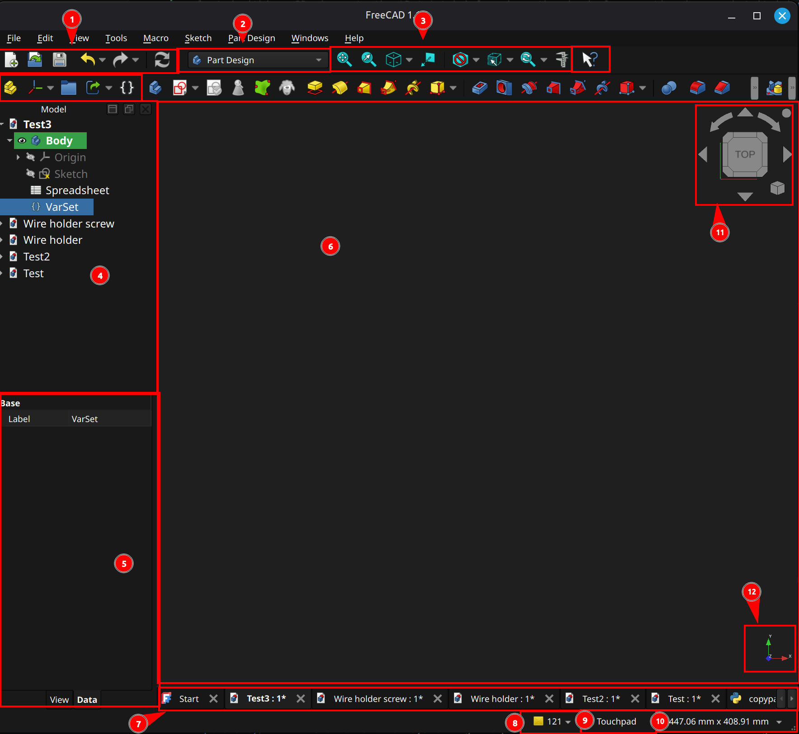
Regardless of which workbench you're in, FreeCAD's UI will likely have the sections highlighted in the screenshot above. Almost everything in the toolbar can also be accessed via the main menu and triggered via a keyboard shortcut.
⚠️NOTE️️️⚠️
When in doubt, click the button immediately to the right of 3 (pointer with a question mark) and select something to learn more about it.
⚠️NOTE️️️⚠️
If something is missing from your toolbar, navigate to View → Toolbars and enable as needed.
Viewport
(6) Viewport: The space in which work in performed. The viewport typically renders and allows control of geometry (e.g., 3D primitives, 2D sketches, and technical drawings). For some workbenches, the viewport displays something different than geometry (e.g., spreadsheet).
(11) Navigation cube: When working in 3D, there will be a navigation cube (located in the viewport's top right in the example) that reduces the burden rotating and reorienting viewing angles, as well as changing perspectives. Clicking the various faces of the cube as well as the surrounding icons reorient the camera and change perspective.
(12) Axis orientation: When working in 3D, the basis axes will be displayed from the current camera's orientation (located in the viewport's button right in the example).
(10) 3D viewport boundaries / spatial unit selection: When the viewport is viewing geometry, this dropdown can be used to change the units of measurement used (e.g., metric to imperial). It also displays the bounds of the viewport in those units of measurement.
(9) 3D viewport mouse controls: When working in 3D, the mouse controls can be changed to different presets using this dropdown (e.g., Blender style mouse controls vs mouse controls optimized for a trackpad).
Hovering over the dropdown displays how mouse controls for the currently selected configuration (e.g., what right-click does).
(3) 3D viewport helpers: When working in 3D, these toolbar buttons provide quick tools to adjust and reorient the view. From left-to-right, ...
Document hierarchy / operations
(4) Model pane: List of open documents, as well as the hierarchy of each open document. In the example, the document Test3 has a part design body with a sketch in it.
(5) Properties pane: For the selected items, this pane lists the properties for those items. If the item is selected within a 3D viewport, the Data tab below shows the physical properties (e.g., what it is) while the View tab below shows the visual properties (e.g., how its rendered).
Note that properties are not limited to what's selected in the viewport. When an item in the model pane is selected, it has its properties show up.
(7) Workspace tabs: Tabs to switch between workspaces.
Basic operations
(1) Basic commands: These toolbar buttons give quick access to common operations. From left-to-right, ...
(2) Workbench switcher: Drop-down that switches between workbenches.
(8) Diagnostic messages: Pop-out that displays log messages. The number displayed is the number of unread diagnostics messages.
[[self src]](data:text/plain,This%20was%20derived%20using%20self%20experimentation%20-%20there%20is%20no%20source%20other%20than%20myself.)
FreeCAD has a built-in spreadsheet and expression engine, accessible through the spreadsheet workbench. A spreadsheet is typically used to store parameters and run formulas, which then go on to be used as the parameters of geometry and other properties of an object. It can also go the other way, pulling data out of a model into a spreadsheet.
⚠️NOTE️️️⚠️
The entire section assumes the reader has prior experience with other spreadsheet engines (e.g., Excel).
↩PREREQUISITES↩
Basic operations
(1) Basic commands: These toolbar buttons give quick access to common operations. From left-to-right, ...
Viewport
(10) Spreadsheet: A matrix of cells, identified by column letter and row number (e.g., C3).
Type while a cell is selected to set that cell's contents. Right click on a row/column to add or remove rows/columns.
(9) Cell alias textfield: This field shows and sets the alias for the selected cell, similar to pressing the cell alias button in the toolbar. When referencing a cell, the alias can be used as a friendly name.
(8) Cell content: This field shows and sets the content of the cell, which may be a formula or a literal.
(7) Zoom slider: This slider and accompanying drop-down are used to zoom in / out of the spreadsheet.
Cell operations and properties
(2) Cell merge/split: These toolbar buttons merge and split cells. From left-to-right, ...
(3) Text alignment: These toolbar buttons align text in a cell. From left-to-right, ...
(4) Text style: These toolbar buttons stylize the text in a cell. From left-to-right, ...
(6) Cell colors: These toolbar buttons set the colors within a cell. From left-to-right, ...
(5) Cell alias button: This toolbar option launches a dialog to set an alias for the selected cell. When referencing a cell, the alias can be used as a friendly name.
↩PREREQUISITES↩
A cell's contents may be ...
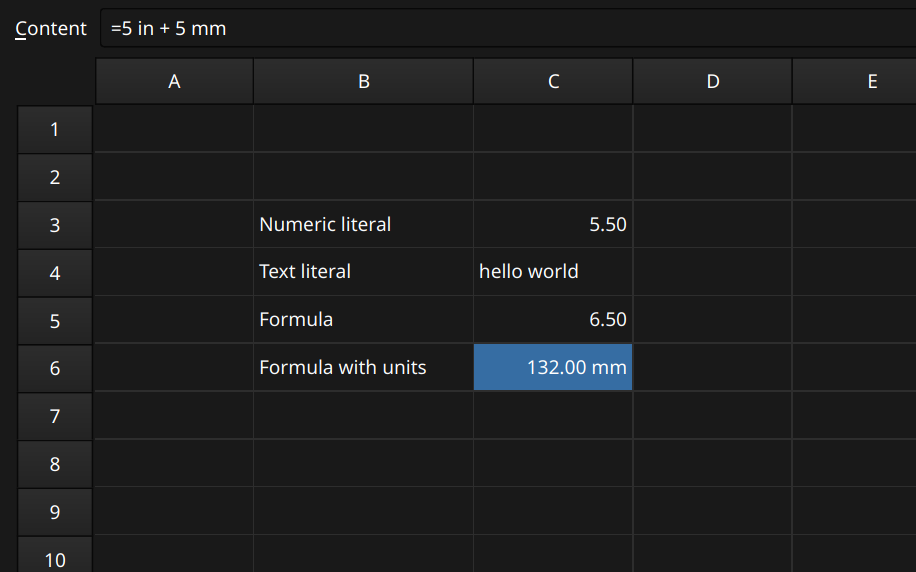
As shown in the example above, formulas are unit-aware (e.g., a formula can add two angles together or two distances together). The cell displays the results in the user's desired unit system (e.g., imperial vs metric).
🔍SEE ALSO🔍
In addition to being set to literals, spreadsheet cells and other properties may also be set to expressions. An expression executes some piece of logic using basic operators, functions, constants, conditionals, and references to other properties (e.g., other cells or data within a model). Operators and functions are unit-aware, requiring a valid combinations of units if supplied. For example, 2mm + 4mm is valid while 2mm + 4 is not. This also applies to references to properties that have units (e.g., Pad001.Length + 1 isn't valid because it adds a pure number to a property containing a length - it requires Pad001.Length + 1mm).
Numbers in an expression may optional have a unit. The following tables contain the unit designations recognized by FreeCAD when inserting a unit (e.g., 5 mm). The following tables were pulled directly from source.
Angle
| Unit | Description |
|---|---|
| ° | Degree; alternative to the unit deg |
| deg | Degree; alternative to the unit ° |
| rad | Radian |
| gon | Gradian |
| M | Minute of arc; alternative to the unit ′ |
| ′ | Minute of arc; this is the prime symbol (U+2032); alternative to the unit M |
| S | Second of arc; DOES NOT WORK; alternative to the unit ″ |
| ″ | Second of arc; this is the double prime symbol (U+2033); alternative to the unit S |
Length
| Unit | Description |
|---|---|
| nm | Nanometer |
| um | Micrometer; alternative to the unit µm |
| µm | Micrometer; alternative to the unit um |
| mm | Millimeter |
| cm | Centimeter |
| dm | Decimeter |
| m | Meter |
| km | Kilometer |
| mil | Thousandth of an inch; alternative to the unit thou |
| thou | Thousandth of an inch; alternative to the unit mil |
| in | Inch; alternative to the unit " |
" |
Inch; alternative to the unit in |
| ft | Foot; alternative to the unit ' |
' |
Foot; alternative to the unit ft |
| yd | Yard |
| mi | Mile |
↩PREREQUISITES↩
An expression can reference properties of other objects by referencing the path hierarchy. For example, if there's a diameter named (diameter constraint) lower_initial_diam within a sketch ...
=<<!!my_sketch!!>>.!!Constraints!!.lower_initial_diam.=!!Sketch!!.!!Constraints!!.lower_initial_diam.⚠️NOTE️️️⚠️
To see the ID of objects, right click in the Model pane and navigate to Tree Settings → Show Internal Name.
⚠️NOTE️️️⚠️
If using labels, the label must be unique.
⚠️NOTE️️️⚠️
To reference a object (such as Sketch / my_sketch in the example), you must use the _self property. For example, !!Sketch!!._self.
↩PREREQUISITES↩
To reference an item in a list or tuple, use the [] operator. For example, !!Sketch!!.!!Constraints!![0] will pull the first constraint within the sketch object.
To reference an enumeration option's text, use the [] operator in addition to referencing the enumeration option itself. For example, Pad.Type.Enum[Pad.Type] will pull out the text for Pad.Type, while Pad.Type itself will only return it's index within the enumeration.
Conditional expressions use C++ style ternary operator syntax: condition ? resultTrue : resultFalse. The condition is defined as an expression that evaluates to either 0 (false) or non-zero (true).
⚠️NOTE️️️⚠️
Any value is evaluated as zero if abs(value) < 1e-7, else it is evaluated as non-zero.
⚠️NOTE️️️⚠️
In FreeCAD 1.1, you can test a boolean directly (e.g., VarSet.MyBool ? 10 : 15) where as in older versions of FreeCAD need a relational operator (e.g., VarSet.MyBool == 1 ? 10 : 15).
Table pulled directly from source.
| Operator | Description |
|---|---|
| + | Addition |
| - | Subtraction |
| * | Multiplication |
| / | Floating point Division |
| % | Remainder |
| ^ | Exponentiation |
| == | Equal |
| != | Not equal |
| > | Greater than |
| >= | Greater than or equal to |
| < | Less than |
| <= | Less than or equal to |
⚠️NOTE️️️⚠️
From the source:
Some unit related errors can seem unintuitive, with expressions either being rejected or producing results that do not match the units of the property being set. Here are some examples:
1/2mm is not interpreted as half a millimeter but as 1/(2mm), resulting in: 0.5 mm^-1.
sqrt(2)mm is not valid because the function call is not a number. This has to be entered as sqrt(2) * 1mm.
| Constant | Description |
|---|---|
| e | Euler's number |
| pi | Pi |
FreeCAD expressions support several built-in functions. The following sections each contain a subset of useful functions pulled directly from the source documentation.
⚠️NOTE️️️⚠️
From the source:
Some unit related errors can seem unintuitive, with expressions either being rejected or producing results that do not match the units of the property being set. Here are some examples:
1/2mm is not interpreted as half a millimeter but as 1/(2mm), resulting in: 0.5 mm^-1.
sqrt(2)mm is not valid because the function call is not a number. This has to be entered as sqrt(2) * 1mm.
Table pulled directly from source.
| Function | Description | Input range |
|---|---|---|
acos(x) |
Arc cosine | -1 <= x <= 1 |
asin(x) |
Arc sine | -1 <= x <= 1 |
atan(x) |
Arc tangent, return value in the range -90° < value < 90° |
all |
atan2(y; x) |
Arc tangent of y/x accounting for quadrant, return value in the range -180° < value <= 180° |
all, the invalid input x = y = 0 returns 0 |
cos(x) |
Cosine | all |
cosh(x) |
Hyperbolic cosine | all |
sin(x) |
Sine | all |
sinh(x) |
Hyperbolic sine | all |
tan(x) |
Tangent | all, except x = n*90 with n = odd integer |
tanh(x) |
Hyperbolic tangent | all |
hypot(x; y) |
Pythagorean addition (hypotenuse), e.g. hypot(4; 3) = 5 |
x and y >= 0 |
cath(x; y) |
Given hypotenuse, and one side, returns other side of triangle, e.g. cath(5; 3) = 4 |
x >= y >= 0 |
Table pulled directly from source.
| Function | Description | Input range |
|---|---|---|
abs(x) |
Absolute value | all |
ceil(x) |
Ceiling function, smallest integer value greater than or equal to x | all |
floor(x) |
Floor function, largest integer value less than or equal to x | all |
mod(x; y) |
Remainder after dividing x by y, sign of result is that of the dividend | all, except y = 0 |
round(x) |
Rounding to the nearest integer | all |
trunc(x) |
Truncation to the nearest integer in the direction of zero | all |
Table pulled directly from source.
| Function | Description | Input range |
|---|---|---|
and(a; b; c; ...) |
AND: 1 if abs of all arguments is greater than or equal to 1e-7, else 0 | all |
or(a; b; c; ...) |
OR: 0 if abs of all arguments is less than 1e-7, else 1 | all |
not(a) |
Negation: 1 if abs(a) is less than 1e-7 else 0 | all |
Table pulled directly from source.
| Function | Description | Input range |
|---|---|---|
| average(a; b; c; ...) | Average value of the arguments, same as sum(a; b; c; ...) / count(a; b; c; ...) | all |
| count(a; b; c; ...) | Count of the arguments, typically used for cell ranges | all |
| max(a; b; c; ...) | Maximum value of the arguments | all |
| min(a; b; c; ...) | Minimum value of the arguments | all |
| stddev(a; b; c; ...) | Standard deviation of the values of the arguments | all |
| sum(a; b; c; ...) | Sum of the values of the arguments, typically used for cell ranges | all |
Table pulled directly from source.
| Type | Function | Description |
|---|---|---|
Tuple
|
tuple(a; b; ...)
|
Example: tuple(2; 1; 2)
|
List
|
list(a; b; ...)
|
Example: list(2; 1; 2)
|
Vector
|
vector(x; y; z)
|
Create a vector using three unit-less or Length unit values.
Example: |
create(<<vector>>; x; y; z)
| ||
Matrix
|
matrix( a11; a12; a13; a14; a21; a22; a23; a24; a31; a32; a33; a34; a41; a42; a43; a44 ) |
Create a 4x4 matrix in row-major order:
A minimum of 1 argument can be supplied such as Example: |
create(<<matrix>>; a11; a12; ...; a44)
| ||
Rotation
|
rotation(axis; angle)
|
Create a Rotation by specifying its axis (Vector) and angle (Angle unit or unit-less), or three Euler angles α, β, γ.
Examples:
|
rotation(α; β; γ)
| ||
create(<<rotation>>; axis; angle)
| ||
create(<<rotation>>; α; β; γ)
| ||
Placement
|
placement(base; rotation)
|
Create a Placement with various parameters, including:
Examples:
|
placement(base; rotation; center)
| ||
placement(base; axis; angle)
| ||
placement(matrix)
| ||
create(<<placement>>; ...)
|
| Function / Operator | Description |
|---|---|
| a+b | Concatenate strings a and b together. |
| str(a) | Convert a into a string. |
| < |
Generate a string literal. |
Strings can also be created via string interpolation using the old Python % syntax for string formatting. For example, <<Cube length is %s and width is %s>> % tuple(Box.Length; Box.Width).
| Function / Operator | Description |
|---|---|
vector(x; y; z) |
Create vector vectors. |
v1 + v2 |
Add two vectors. |
v1 - v2 |
Subtract two vectors. |
v * s |
Uniformly scale a vector by s. |
vangle(v1; v2) |
Angle between two vectors in degrees. |
vcross(v1; v2) |
Cross product of two vectors v1×v2. |
v1 * v2 |
Dot product of two vectors v1⋅v2. |
vdot(v1; v2) |
Dot product of two vectors v1⋅v2. |
vlinedist(v1; v2; v3) |
Distance between vector v1 and a line through v2 in direction v3. |
vlinesegdist(v1; v2; v3) |
Distance between vector v1 and the closest point on a line segment from v2 to v3. |
vlineproj(v1; v2; v3) |
Project vector v1 on a line through v2 in direction v3. |
vnormalize(v) |
Normalize a vector to a unit vector. |
vplanedist(v1) |
Distance between vector v1 and a plane defined by a point v2 and a normal v3. |
vplaneproj(v1) |
Project vector v1 on a plane defined by a point v2 and a normal v3. |
vscale(v; sx; sy; sz) |
Non-uniformly scale a vector by sx in the X direction, sy in the Y direction, and sz in the Z direction. |
vscalex(v; sx) |
Scale a vector by sx in the X direction. |
vscaley(v; sy) |
Scale a vector by sy in the Y direction. |
vscalez(v; sz) |
Scale a vector by sz in the Z direction. |
Rotation and Placement can each be represented by a Matrix. The following functions all take in a Matrix, Rotation, or Placement as their first parameter denoted in the table below by m. The type of the returned object is the same as the object supplied in the first argument except when using mtranslate on a Rotation, in which case a Placement will be returned.
| Function | Description |
|---|---|
matrix( a11; a12; a13; a14; a21; a22; a23; a24; a31; a32; a33; a34; a41; a42; a43; a44 ) |
Create matrix. |
minvert(m) |
Calculate the inverse matrix. |
mrotate(m; rotation)mrotate(m; axis; angle)mrotate(m; α; β; γ) |
Rotate by either a Rotation, an axis (Vector) and an angle (Angle unit or unit-less), or three Euler angles α, β, γ. |
mrotatex(m; angle) |
Rotate around the X axis. |
mrotatey(m; angle) |
Rotate around the Y axis. |
mrotatez(m; angle) |
Rotate around the Z axis. |
mtranslate(m; vector)mtranslate(m; x; y; z) |
Translate by a vector (Vector) or X, Y, Z values. If a Rotation is translated, the returned object is a Placement. |
mscale(m; vector)mscale(m; x; y; z) |
Scale by a vector (Vector) or X, Y, Z values. |
vlinedist(v1; v2; v3) |
Distance between vector v1 and a line through v2 in direction v3. |
vlinesegdist(v1; v2; v3) |
Distance between vector v1 and the closest point on a line segment from v2 to v3. |
vlineproj(v1; v2; v3) |
Project vector v1 on a line through v2 in direction v3. |
vnormalize(v) |
Normalize a vector to a unit vector. |
vplanedist(v1) |
Distance between vector v1 and a plane defined by a point v2 and a normal v3. |
vplaneproj(v1) |
Project vector v1 on a plane defined by a point v2 and a normal v3. |
vscale(v; sx; sy; sz)vscalex(v; sx)vscaley(v; sy)vscalez(v; sz) |
Non-uniformly scale a vector by sx in the X direction, sy in the Y direction, and sz in the Z direction. |
Sketcher workbench allows creating 2D sketches. These 2D sketches typically go on to by used by other workbenches (e.g., they define the outline of some 3D feature in the creation of models via the part design workbench).
Sketcher workbench has the following core primitives:
In the screenshot below, the red geometry are visualizations of constraints (e.g., angle and radius), while the white lines are the geometric primitives those red lines apply to (e.g., arc).
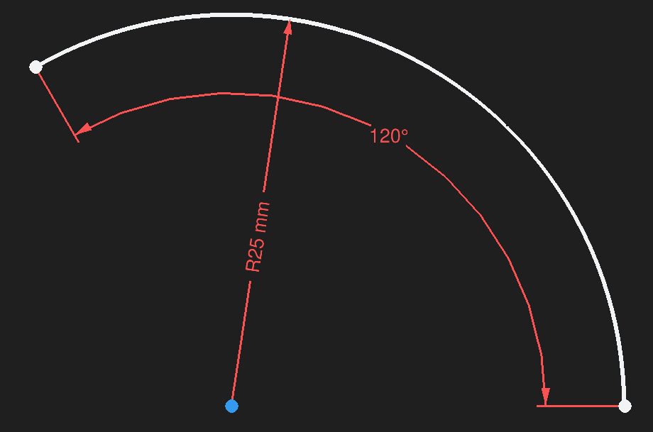
There are different element types (e.g., construction geometry, projection geometry) and different constraint types (e.g., reference constraints, driving constraints). These are documented in the subsections below.
↩PREREQUISITES↩

The Sketcher workbench has two modes: Editing a sketch or viewing a sketch. The toolbar buttons change depending on the mode. The UI layout shown in the screenshot above is when editing a sketch, which is the mode that users will spend most of their time in.
⚠️NOTE️️️⚠️
The behavior of many of the UI controls highlighted above / documented below changes based on the state of the application. For example, ...
These nuances aren't captured here, but in sections later on. This is just a basic accounting of the UI controls.
General Commands
(1) General commands: These toolbar buttons give quick access to common operations. When not editing a sketch, the general commands are as follows:

From left-to-right, ...
When editing a sketch, the general commands are as follows:

From left-to-right, ...
(13) Leave sketch.
Elements and Constraints
(3) Construction geometry toggle.
(2) Create elements: These toolbar buttons give quick access to create elements. From left-to-right, ...
(5) Constraints toggle: These toolbar buttons disable constraints or keep them enabled but render them unenforced (referred to as reference constraints).
(4) Create constraints: These toolbar buttons give quick access to create constraints. From left-to-right, ...
(7) Selection helpers: These toolbar buttons give quick access to select elements / constraints associated with the current selection. From left-to-right, ...
(8) Arc circular helper toggle: Toggles the visibility of the underlying circle / ellipse for circular arcs.
(10) Internal geometry toggle: Toggles the visibility of the internal geometry for certain element types (e.g., ellipse arc).
(11) Switch virtual space.
B-Splines
(6) B-spline tools: These toolbar buttons give quick access to b-spline helpers and tools. From left-to-right, ...
(9) B-spline informational toggles: These toolbar buttons give quick access to toggle on/off information displayed for b-splines. From left-to-right, ...
Tools
(12) Tools: These toolbar buttons give quick access to various sketching tools. From left-to-right, ...
Panels
(13) Constraints pane: This pane lists, allows selection, and allows configuration of constraints, mirroring whatever is selected in the viewport.
(14) Elements pane: This pane lists, allows selection, and allows configuration of elements, mirroring whatever is selected in the viewport.
↩PREREQUISITES↩
Sketching involves creating elements, constraining them, and deleting them. The sketch below is a non-trivial set of elements chained together using constraints.

The subsections below document these basic concepts.

To create an element, select the element from the toolbar (or the main menu, or use the element's shortcut key) and click on the viewport multiple times. For most elements, on the first click the viewport should show that the item is being created, and the movement of the mouse button and subsequent clicks further constructs the element. For example, to add a line, select the line in the toolbar, click in the viewport, and slightly move the mouse. The line's preview will display.
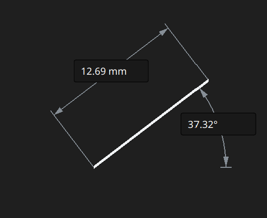
A subsequent click will be complete adding the line.

In the preview, there are two textboxes, one that specifies a distance and one that specifies an angle. These are referred to as On-View-Parameters, and they're available for certain elements, When in preview, pressing Tab will cycle into these textboxes, where a value may be entered followed by pressing Enter. Using them adds constraints to line. For example, if used for the line above, a constraint is added for the line's length and another constraint is added for the line's angle from the horizontal axis.
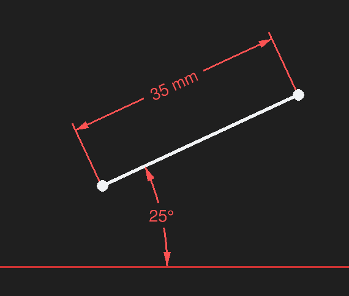
Alternatively, an element can have constraints added to it by selecting the relevant portions of an element and clicking an applicable constraint. For example, the line can have the exact same constraints applied by ...

🔍SEE ALSO🔍
⚠️NOTE️️️⚠️
There are multiple ways to apply constraints, discussed in each constraint's source. For example, instead of first selecting the line and then choosing the distance dimension constraint, you can first make sure nothing is selected, then click the distance dimension constraint, then click the line.
Continue mode allows element / constraint creation to continue after an element / constraint is created, allowing multiple such elements / constraints to be created many times over. The creation tool remains active until the user hits Esc or selects some other tool from the toolbar. For example, after selecting the line element from the toolbar and creating a line on the sketch, more lines can be created on the sketch without having to click the line element again in the toolbar.
⚠️NOTE️️️⚠️
Pressing Esc if no tool is active will exit sketch edit mode. This can be turned off in preferences if inadvertently pressing Esc too many times.
Continue mode can be turned off in preferences (on by default).
For certain element creation tools, On-View-Parameters allows explicitly adding constraints during the creation process by presenting input fields alongside the element's preview. For example, dropping a line will show a textbox for length constraint and a textbox for angle constraint. Pressing tab cycles through these textboxes, while pressing enter adds the constraints.
Continue mode can be turned off and configured in preferences (on by default).
When creating an element, if the placement of some part of that element ends on an existing element, an auto constraint may be applied. An auto constraint is a constraint that's automatically added by virtue of how the elements end up together. For example, if the end of a line ends up on the start of a line, auto constraint will add a constraint known as coincident constraint which bounds those two points together.
When an auto constraint is to be applied, the icon of the constraint is shown on the lower right of the icon of the element being created.
⚠️NOTE️️️⚠️
I can't do a screenshot of this because flameshot won't capture the mouse cursor, but just imagine that you're creating a line. The mouse cursor will have the icon of the line creation icon (same as the toolbar) next to it. As you're putting down the line, when you get close to the existing line's point, a second smaller icon showing the constraint to be added show up to the right of the line creation icon. That second smaller icon is the coincident constraint icon.
Auto constraints is enabled/disabled per sketch, not globally. To change, update in the constraints pane or the sketch's view Autoconstraints property.
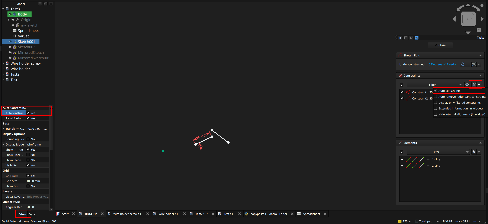
↩PREREQUISITES↩
Elements and constraints can be selected in any of the following ways:
Single selection: Left-clicking an element or constraint toggles whether its selected.
Previously selected elements are not discarded on single select. While it isn't necessary to hold Ctrl while selecting multiple elements, it is beneficial in that a mis-click into empty space won't deselect everything.
Box selection: Left-clicking an empty area and dragging draws a selection rectangle, selecting elements within the rectangle (not constraints, only selections). Depending on the direction of the drag, the selection behavior changes. If the box dragging is from ...
Previously selected elements are not discarded on box select.
Connection selection: Double-clicking an edge selects all edges directly and indirectly connected to it via endpoints. Endpoints only need to have the same coordinates (no need endpoints to be connected via constraints - e.g.,coincident constraints).
Previously selected elements are not discarded on connection select.
Element / Constraints pane: Constraints and the individual sub-elements of each element (e.g., a line elements's endpoint and actual line) are selectable via the constraints pane and elements pane, respectively. The elements pane lists the individual elements as well as the sub-elements for those elements, which can be individually clicked (e.g., select 2-Line's first endpoint).

Previously selected elements are discarded on connection select.
Select all: To select everything within a sketch, use Ctrl+A or navigate to Edit → Select All.
↩PREREQUISITES↩
To delete an element or constraint, select it and hit the Delete key. If an element is deleted, its related constraints are automatically deleted as well, even if they were left unselected when the Delete key was hit.
[[self src]](data:text/plain,This%20was%20derived%20using%20self%20experimentation%20-%20there%20is%20no%20source%20other%20than%20myself.)
↩PREREQUISITES↩
Constraints can be named by either ...

Constraints can also reference and calculate their values via expressions. The formula button (inside the value textbox, to its right) opens an Expression Editor window that allows entering an expression instead of a constant, similar to inserting a formula in a cell for a spreadsheet.

The expression can access data in the sketch (e.g., other constraints) as well as outside the sketch (e.g., alias in a spreadsheet or field in a VarSet). In the example, the constraint is copying the value of another constraint and multiplying it by 2.
[[self src]](data:text/plain,This%20was%20derived%20using%20self%20experimentation%20-%20there%20is%20no%20source%20other%20than%20myself.)
↩PREREQUISITES↩
An element is deemed projection geometry if that element was pulled in from a 3D object visible from the sketch. Projection geometry is linked to the 3D object it came from.
⚠️NOTE️️️⚠️
Although not discussed yet, 3D objects can come from a variety of different places. For example, a sketch may be turned into 3D objects / 3D features on an existing 3D object via the part design workbench, and subsequent sketches may project geometry from that object.
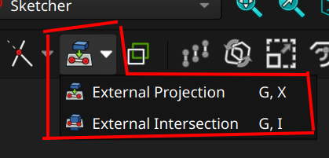
To project, select the External Projection toolbar button (keyboard shortcut G, X) and select until the all desired elements have been projected (Esc or select another tool to exit). In some cases, it may be difficult to select the desired external geometry (e.g., it may be on the opposite side of the object, hidden from view). Recall that the camera can be rotated while sketching. If rotated, the camera's rotation can be brought back inline with the sketch by clicking the Align View to Sketch toolbar button (keyboard shortcut Q, P): .
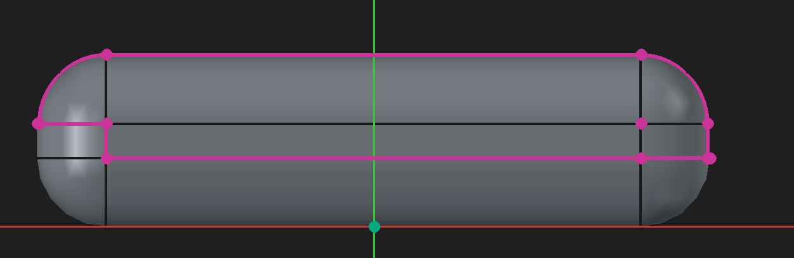
To project intersections with the sketching plane, select the External Intersection toolbar button (keyboard shortcut G, I) and select until all desired elements have been projected (Esc or select another tool to exist). In most cases, it's difficult to select the desired intersections because they're likely blocked from view. Recall that the Toggle Section View toolbar button (keyboard shortcut Q, S) will temporarily cut from view anything that extends past the sketch plane towards the camera:  .
.

⚠️NOTE️️️⚠️
When experimenting, I found pulling in intersections to be finicky. Certain curvatures won't get pulled in, or will get pulled in as only a single point off the curvature. It might be that not all conics are supported? Or maybe the feature is just buggy.
⚠️NOTE️️️⚠️
Projected geometry may also be construction geometry, discussed in sections further one.
The color and line style changes based on the type of projected element and the state of the overall sketch. The screenshot below shows the default colors used by FreeCAD for the various types and states.

[src] [src] [src] [[self src]](data:text/plain,This%20was%20derived%20using%20self%20experimentation%20-%20there%20is%20no%20source%20other%20than%20myself.)
↩PREREQUISITES↩
An element is deemed as construction geometry if it isn't exposed to consumers of the sketch (it's internal to the sketch, hidden once the sketch is closed). Construction geometry is used within the sketch to assist in constraining other geometry.
Construction geometry comes in different forms:
Construction geometry: A normal element in the sketch is construction geometry.
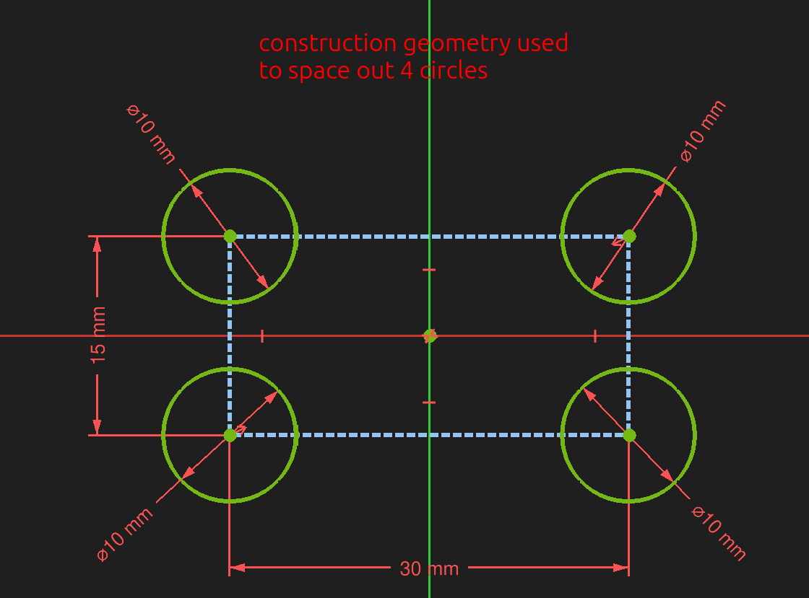
Projected geometry that's also construction geometry: A projected element in the sketch is construction geometry.

Internal alignment geometry: Construction geometry added by and tied to a complex element, used to control that element (e.g., ellipse control arms).

To toggle one or more elements to / from construction geometry, select the elements and click the toggle construction geometry button (keyboard shortcut G,N): 
To toggle element creation from / to construction geometry, ensure nothing is selected and click te toggle construction geometry button. Toolbar buttons to create elements will change color to indicate that elements being created are construction geometry.

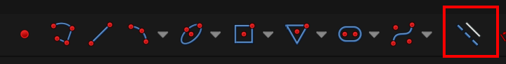
The color and line style changes based on the type of construction element and the state of the overall sketch. The screenshot below shows the default colors used by FreeCAD for the various types and states.
[src] [src] [src] [src] [src] [[self src]](data:text/plain,This%20was%20derived%20using%20self%20experimentation%20-%20there%20is%20no%20source%20other%20than%20myself.)
↩PREREQUISITES↩
If an element ...
A degree of freedom is a parameterization that hasn't been set. For example, ...
a point has 2 degrees of freedom:
The example below fully constrains a point by setting its position in relation to the origin of the sketch.
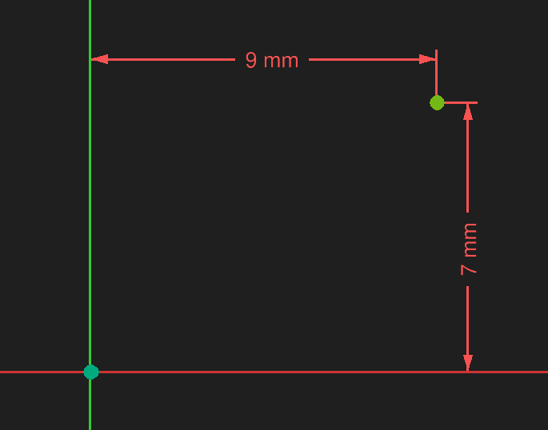
a line has 4 degrees of freedom:
The example below fully constrains a line by setting the position of its first point to the origin, and then giving it and angle and a length. The position of the second point is derived from the combination of angle and length.

an arc has 5 degrees of freedom:
The example below fully constrains an arc by setting its center point to the origin of the sketch, setting the radius to 14mm, setting the angle of the arc to 45 degrees, and positioning the arc on the underlying circle by stating that the lower point sits 7mm above the X axis.
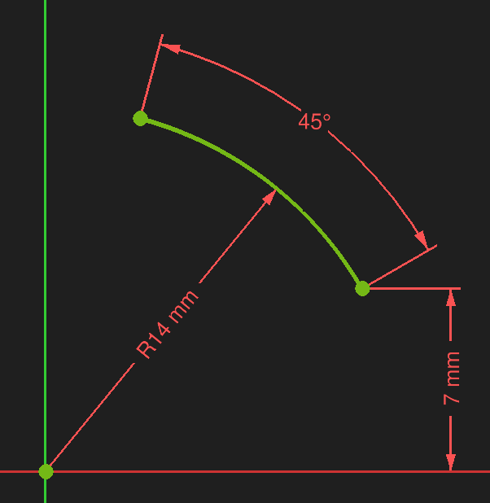
The overall constraint state for all elements in the sketch is shown in the Sketch Edit pane.
Under-constrained / Fully constrained: When there's 1 or more degrees of freedom, the Sketch Edit pane will report that the sketch is under-constrained. When there's exactly 0 degrees of freedom, the Sketch Edit pane will report that the sketch is fully constrained. In the example below, the two lines each have a point with a coincident constraint to the origin while the other endpoint is unconstrained (4 degrees of freedom). Clicking the degrees of freedom text in the Sketch Edit pane will will select the two unconstrained endpoints.
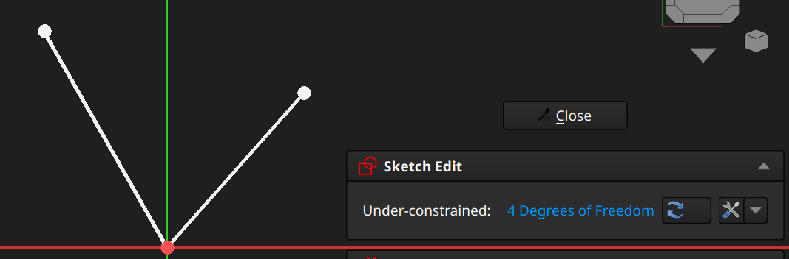
Redundant constraints / Partially redundant: If a sketch has constraints that deduce to the same thing, the Sketch Edit pane will report that the sketch has redundant constraints. In the example below, the line's start point has a coincident constraint to the origin and ...
This reports a redundant constraint because the end point of (1mm, 1mm) implies a 45 degree angle from the X axis. Clicking the redundant constraints text in the Sketch Edit pane selects the redundant constraints.
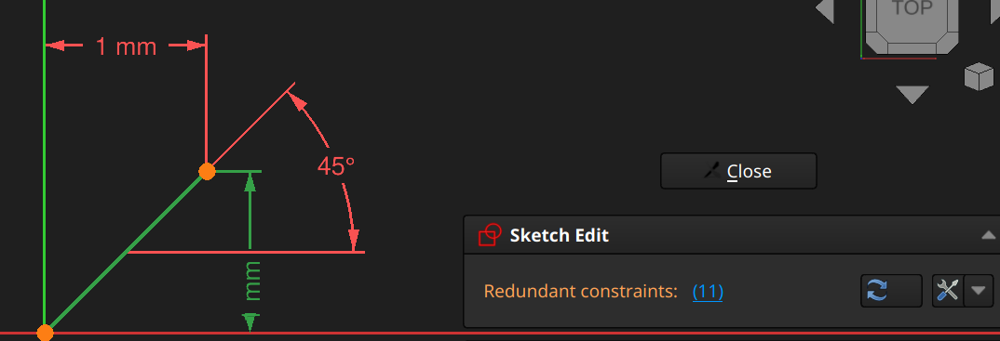
Over-constrained: If a sketch has conflicting constraints (they both can't be satisfied because they're opposed to each other), the Sketch Edit pane will report that the sketch has over-constrained. In the example below, the triangle in this sketch is constrained to be an equilateral triangle, but it also has a coincident constraint that says two of the triangle's vertices should be at the same point, making it an impossible to satisfy all constraints. Clicking the over-constrained text in the Sketch Edit pane selects the conflicting constraints.
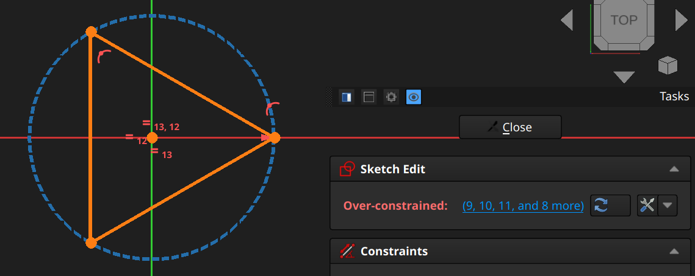
Typically, once a conflicting constraint is added, the number of conflicting constraints reported becomes much more than 2. That's usually because the 1 added constraint goes is invalid against many existing constraints. The Sketch Edit pane doesn't group conflicting constraints together (e.g., 1,3,5 are valid together vs 2,4 are valid together, but all together they conflict) or give any reasoning as to why the constraints conflict (e.g., deduced angle is 30 degrees but angle constraint is attempting to set to 45 degrees).
⚠️NOTE️️️⚠️
There are other messages, but they usually mean something critical has gone wrong (e.g., Malformed constraints, Solver failed to converge).
It is important that a completed sketch always be fully constrained, otherwise the solver (software responsible for applying constraints) may shift and reorient the elements on that sketch based on the what is and isn't constrained. Even if a sketch is fully constrained, it may still be subject to sketch flipping, a phenomenon where the sketch changes because even when fully constrained there is more than 1 possible outcome for the constraints. In the example below, both arcs have the exact same constraints (both fully constrained), but there are two possible solutions.

🔍SEE ALSO🔍
[src] [src] [src] [src] [src] [src] [[self src]](data:text/plain,This%20was%20derived%20using%20self%20experimentation%20-%20there%20is%20no%20source%20other%20than%20myself.)
↩PREREQUISITES↩
Even if a sketch is fully constrained, it may still be subject to sketch flipping, a phenomenon where the sketch reshapes because even when fully constrained there is more than 1 possible outcome for the constraints.
Example 1
In the example below, both arcs have the exact same constraints (both fully constrained), but there are two possible solutions.
Sketch flipping happens because, in certain cases, directionality may not exist. There's no constraint that ties the arc as to which side of the X axis it's on.
This can be fixed by adding a constraint to force directionality. For example, adding a horizontal constraint between the end of the arc and the origin adds directionality. A horizontal constraint / vertical constraint is signed, meaning that a value of 12mm goes in one direction while -12mm goes in the opposite direction.
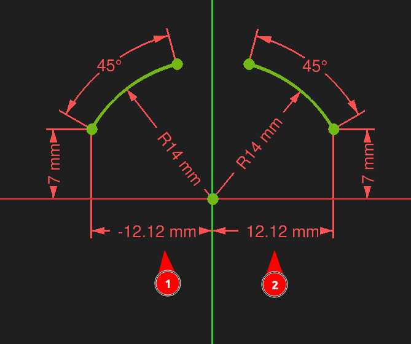
Example 2
In the example below, both shapes have the exact same constraints (both fully constrained) except that the second version is 50mm away from the Y axis instead of 16mm. Note that the sketch changed shape even though all other constraints are equivalent.


As with the previous example, there is a lack of directionality that causes sketch flipping. The top horizontal line has a distance constraint of 10mm, but there's nothing constraining the order of the points (which of its two points is closer to the Y axis). The solver is free to swap the points as it sees fit, so long as the distance is still 10mm.
Again, this can be fixed by adding a constraint to force directionality. For example, instead of using a distance constraint of 10mm, using a horizontal constraint of 10mm will. A horizontal constraint with a value of 10mm will fix the sketch into one orientation, while -10mm will fix it into the other orientation.
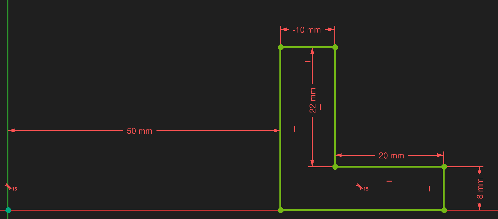
Example 3
The example below is similar to the previous example, except more complex. There's double flipping occurring:


Again, this can be fixed by adding one or more constraints to force directionality:

To prevent flipping, it's important to anchor the sketch using constraints that support directionality. In general ...
[src] [src] [[self src]](data:text/plain,This%20was%20derived%20using%20self%20experimentation%20-%20there%20is%20no%20source%20other%20than%20myself.)
↩PREREQUISITES↩
⚠️NOTE️️️⚠️
The word contour here just means the outline of a shape that you draw in the sketcher. It doesn't have the same special meaning as the contours_BS vs holes_BS meaning in Bambu Studio.
For a sketch to be valid for use as a 3D feature (e.g., as a profile that extrudes into a 3D addition or punches into a 3D face), it must conform to several expectations:
No open contours: A contours must be closed, meaning gaps between endpoints of that contour aren't allowed (no matter how small).
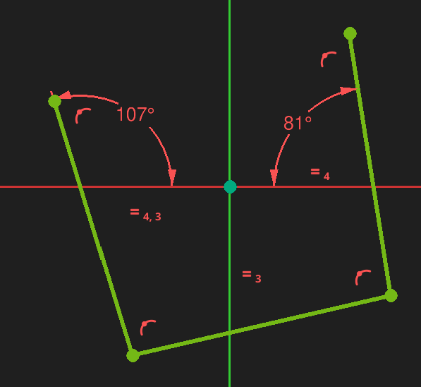
No intersection: A contour must not intersect with other contours or self-intersect.

⚠️NOTE️️️⚠️
While it contours can't intersect, one contour is allowed to be wholly contained in the. See further down for more information.
No shared edges between contours: Two contours must not share an edge.

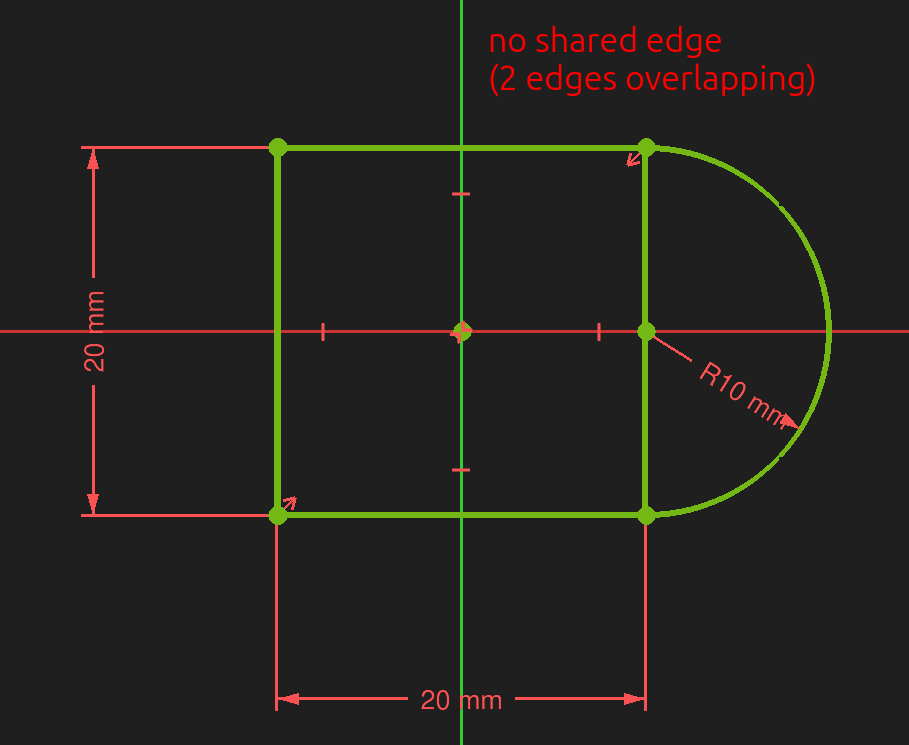
No T-connections: A contour must not have two edges sharing a common point / point touching an edge.
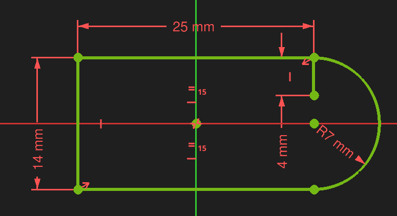
Contours are allowed to be nested (but not intersecting). Nesting alternates between creating voids in the 3D feature.


⚠️NOTE️️️⚠️
These rules don't apply to construction geometry because construction geometry doesn't appear outside of editing a sketch.
↩PREREQUISITES↩
An element is a 2D geometric primitive (e.g., point, line, arc, and spline). The element itself defines a primitive, while the parameterization of the primitive are defined by constraints applied to the element (constraints are discussed in later sections).
🔍SEE ALSO🔍
The subsections below detail the various elements available.
↩PREREQUISITES↩
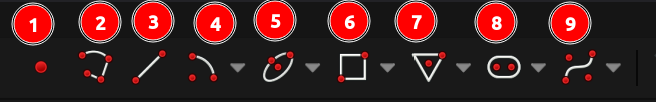
To create a point, use toolbar button 1 (keyboard shortcut G,Y) and click within the 3D viewport to place the point.
↩PREREQUISITES↩
To create a line, use toolbar button 3 (keyboard shortcut G,L). Once the tool is active, select the mode in which the line should be created (cycle keyboard shortcut M). The mode defines the constraints presented by On-View-Parameters when the line is being created:
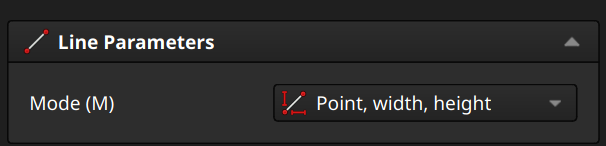
Click within the 3D viewport to place the element and either fill out the On-View-Parameters or click again to place the second point.
⚠️NOTE️️️⚠️
A line is made up of 2 points.
↩PREREQUISITES↩
To create a rectangle, use toolbar button 6 to present a drop-down and either select ...
The selection activates the tool with specific Rectangle Parameters preset. Those parameters can continue to be set once the tool is active:
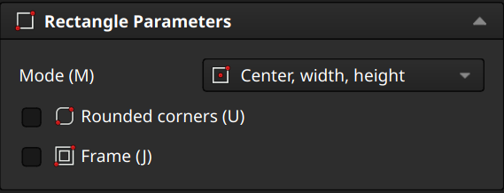
Click within the 3D viewport to place the element and either fill out the On-View-Parameters or click until placement is complete.
⚠️NOTE️️️⚠️
A rectangle is made up of at least 4 lines. 4 more added if it's framed. 4 arcs added if it's rounded.
↩PREREQUISITES↩
To create a polygon, use toolbar button 7 to present a drop-down and either select ...
⚠️NOTE️️️⚠️
Triangle is an equilateral triangle.
Except for Polygon, the selection activates the tool with specific Polygon Parameters preset. Those parameters can continue to be set once the tool is active:

Click within the 3D viewport to place the element and either fill out the On-View-Parameters or click until placement is complete.
⚠️NOTE️️️⚠️
A polygon is made up of n lines and a circle (construction geometry).
[src] [src] [src] [src] [src] [src] [src]
↩PREREQUISITES↩
To create an ellipse or circle, use toolbar button 5 to present a drop-down and either select ...
Once the tool is active, select the mode in which the line should be created (cycle keyboard shortcut M). The mode defines the constraints presented by On-View-Parameters when the line is being created:


Click within the 3D viewport to place the element and either fill out the On-View-Parameters or click until placement is complete.
↩PREREQUISITES↩
To create an arc, use toolbar button 4 to present a drop-down and either select ...
Of the options, ...
for the first two (circular arcs), once the tool is active select the mode in which the line should be created (cycle keyboard shortcut M):
The only mode that defines constraints presented by On-View-Parameters when being created is Center.

for the remainder, there are no options and On-View-Params aren't enabled.
Click within the 3D viewport to place the element and either fill out the On-View-Parameters or click until placement is complete.
↩PREREQUISITES↩
A polyline is a helper that chains together lines and arcs into a path. To create a polyline use toolbar button 2 (keyboard shortcut G,M). Then, either select where to drop the first point or click an existing endpoint. Continue clicking to place new segments in a chain, hitting M to cycle through the line and arc options:
Click within the 3D viewport to place the element and continue clicking to draw. Hit Esc to end.
There must be a previous segment for M to cycle through line and arc options (there will be if you dropped on an existing endpoint). For the initial segment, the mode is always hardcoded to a line (M won't cycle).
↩PREREQUISITES↩
To create a slot, use toolbar button 8 to present a drop-down and either select ...
Slot and Arc Slot are different tools. When ...
Slot is activated, there are no parameters.
Arc Slot is activate, there are parameters:

Click within the 3D viewport to place the element and either fill out the On-View-Parameters or click until placement is complete.
↩PREREQUISITES↩
To create a b-spline, use toolbar button 9 to present a drop-down and either select ...
The selection activates the tool with specific Rectangle Parameters preset. Those parameters can continue to be set once the tool is active:
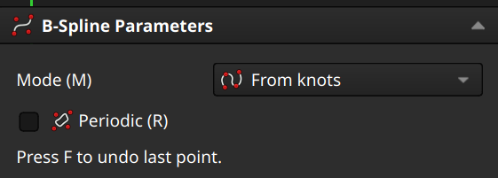
Click within the 3D viewport to place the element and either fill out the On-View-Parameters or click until placement is complete. Hit Esc to end.
There are various b-spline modifiers / helpers:
There are various visual helpers for b-splines that can be enabled / disabled:
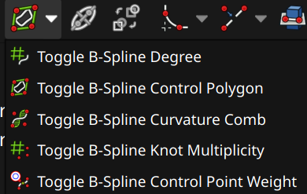
↩PREREQUISITES↩
A constraint limits the possible values for an element's parameters. For example, a line may have an endpoint constrained onto the X-axis, in which case the position of that endpoint must always have a Y position of 0.
🔍SEE ALSO🔍
The subsections below detail the various constraints available.
A Distance Dimension constraint sets the distance.
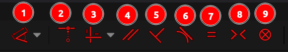
To create a Distance Dimension constraint, select either ...
Then, use toolbar button 1 to present a drop-down and select Distance Dimension (keyboard shortcut K,D). A pop-up will ask for the length value. Once the constraint has been created, press Esc to exit.
Distance Dimension works on the elements most users expect (e.g., distance between two points, distance of a line). It also works on other elements. For example, Distance Dimension can be applied to point and a line, an arc, two circles / arcs, a line and a circle / arc,
⚠️NOTE️️️⚠️
You can select the constraint first and then pick the two things to create a constraint between, but that breaks down in certain cases. For example, ...
For the last point, as soon as you click the line, the constraint will get triggered on the line.
To work around this, click the line and arc first, then select Distance Dimension.
By definition, a distance must be a non-negative value. Imagine two points on a horizontal line A and B. The distance between (A,B) is the same as the distance between (B,A). For example, if A=5 and B=4, ...
Given this, it's important to remember that distance does not encode a direction (e.g., if it did, the abs would go away, meaning the distance from B to A would have been -1 instead of 1). This lack of direction means that the sketcher's solver can decide to flip sketches even if the sketch is fully constrained (unless it's somehow further constrained to define a direction). For example below, the rectangle below has two distance constraints, ...
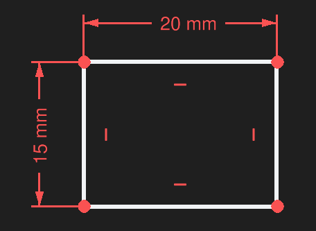
Because distance doesn't encode direction, the sketcher can decide to flip the horizontal edges or the vertical edges at any time. Imagine taking the lower-right corner of this rectangle and using a coincident constraint to tie it to the origin. Because the edges can flip, at any time the lower-right corner can become the upper-right corner, upper-left corner, or lower-left corner.
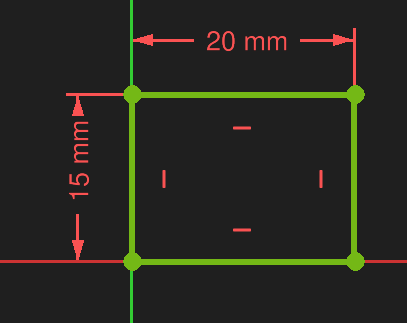

⚠️NOTE️️️⚠️
To avoid sketch flipping, you need to add additional constraints that support directionality.
🔍SEE ALSO🔍
[src] [[self src]](data:text/plain,This%20was%20derived%20using%20self%20experimentation%20-%20there%20is%20no%20source%20other%20than%20myself.)
↩PREREQUISITES↩
A Horizontal Dimension constraint sets the how far apart two elements are, horizontally. Unlike the Distance Dimension constraint, it allows direction via positive and negative values.
To create a Horizontal Dimension constraint, select either ...
Then, use toolbar button 1 to present a drop-down and select Horizontal Dimension (keyboard shortcut L). A pop-up will ask for the length value. Once the constraint has been created, press Esc to exit.
⚠️NOTE️️️⚠️
You can select the constraint first and then pick the two things to create a constraint between, but that breaks down in certain cases. For example, you can't apply to just a single point.
If the selection is ...
one point, the constraint will be relative from the origin:
two points, the constraint will be relative from the first selected point:
one line, the constraints will be applied as if the line's two points were selected. The line's first dropped point during creating is treated as the first point, and the second dropped point is treated as the second point.
[src] [[self src]](data:text/plain,This%20was%20derived%20using%20self%20experimentation%20-%20there%20is%20no%20source%20other%20than%20myself.)
↩PREREQUISITES↩
A Vertical Dimension constraint sets the how far apart two elements are, vertically. Unlike the Distance Dimension constraint, it allows direction via positive and negative values.
To create a Vertical Dimension constraint, select either ...
Then, use toolbar button 1 to present a drop-down and select Vertical Dimension (keyboard shortcut I). A pop-up will ask for the length value. Once the constraint has been created, press Esc to exit.
⚠️NOTE️️️⚠️
You can select the constraint first and then pick the two things to create a constraint between, but that breaks down in certain cases. For example, you can't apply to just a single point.
If the selection is ...
one point, the constraint will be relative from the origin:
two points, the constraint will be relative from the first selected point:
one line, the constraints will be applied as if the line's two points were selected. The line's first dropped point during creating is treated as the first point, and the second dropped point is treated as the second point.
[src] [[self src]](data:text/plain,This%20was%20derived%20using%20self%20experimentation%20-%20there%20is%20no%20source%20other%20than%20myself.)
↩PREREQUISITES↩
Lock Position is not a constraint, but a helper that applies both a Vertical Dimension constraint and a Horizontal Dimension constraint to the selection, effectively locking the selection in place.
To apply Lock Position, select the element, use toolbar button 1 to present a drop-down, and select Lock Position (keyboard shortcut K,L). Once the constraint has been created, press Esc to exit.
⚠️NOTE️️️⚠️
You can select the constraint first and then pick the two things to create a constraint between, but that breaks down in certain cases. For example, you can't apply to just a single point.
If the selection is ...
A Radius Dimension constraint sets the radius of circles, arcs, and B-spline weight circles.
⚠️NOTE️️️⚠️
From the source:
After a B-spline is created, it is possible to define the weight of the control points by changing the radii of the weight circles. The equality constraints on the circles need to be deleted first. The radius constraint is arbitrary, the weight of the control points will be defined by the relative radii of the circles. It works similar to gravity: the bigger a circle is in relation to the others, the more the curve will be attracted to that control point.
To create a Radius Dimension constraint, select an element (e.g., arc), use toolbar button 1 to present a drop-down, and select Radius Dimension (keyboard shortcut K,R). A pop-up will ask for the radius value. Once the constraint has been created, press Esc to exit.
⚠️NOTE️️️⚠️
You can select the constraint first and then pick the two things to create a constraint between, but that may breaks down in certain cases where more than 1 selection is required.
A Diameter Dimension constraint sets the diameter of circles, and arcs.
⚠️NOTE️️️⚠️
Unlike Radius Dimension, Diameter Dimension cannot be used for B-splines. From the source:
It cannot be used for B-spline weight circles.
To create a Diameter Dimension constraint, select the element (e.g., circle), use toolbar button 1 to present a drop-down, and select Diameter Dimension (keyboard shortcut K,O). A pop-up will ask for the diameter value. Once the constraint has been created, press Esc to exit.
⚠️NOTE️️️⚠️
You can select the constraint first and then pick the two things to create a constraint between, but that may breaks down in certain cases where more than 1 selection is required.
An Angle Dimension sets the angle between two edges, a line an an axis of the sketch, or the aperture angle of a circular arc.
To create a Angle Dimension constraint, select either ...
Then, use toolbar button 1 to present a drop-down and select Angle Dimension (keyboard shortcut K,A). A pop-up will ask for the angle value. Once the constraint has been created, press Esc to exit.
⚠️NOTE️️️⚠️
You can select the constraint first and then pick the two things to create a constraint between, but that may breaks down in certain cases where more than 1 selection is required.
If the selection is ...
↩PREREQUISITES↩
Radius-Diameter Dimension is not a constraint, but a helper that applies either a Radius Dimension constraint or a Diameter Dimension constraint to the selection, depending on the type of element it is.
To apply Radius-Diameter Dimension, select the element (e.g., arc), use toolbar button 1 to present a drop-down, and select Radius-Diameter Dimension (keyboard shortcut K,S). A pop-up will ask for the diameter/radius value. Once the constraint has been created, press Esc to exit.
⚠️NOTE️️️⚠️
You can select the constraint first and then pick the two things to create a constraint between, but that breaks down in certain cases. For example, you can't apply to just a single point.
If the selection is ...
↩PREREQUISITES↩
Dimension is not a constraint, but a helper that allows cycling through most possible constraints for the element selection.
To apply Dimension, select either ...
Then, use toolbar button 1 to present a drop-down and select Dimension (keyboard shortcut D). Continue to hit M until the desired constraint appears and click to apply. A pop-up may appear asking for a value (e.g., angle if the constraint is Angle Dimension constraint). Once the constraint has been created, press Esc to exit.
For example, if the selection is two lines, the possible constraints that can be cycled through may include Angle Dimension and Parallel.
⚠️NOTE️️️⚠️
You can select the constraint first and then pick the two things to create a constraint between, but that breaks down in certain cases. For example, you can't apply to just a single point.
⚠️NOTE️️️⚠️
Will selecting 3 items work? Select 2 points and a line - does it default to a symmetry constraint?
A Coincident constraint sets a point to lie on another point, edge (e.g., line, rim of an arc, rim of a circle, b-spline), or basis axis.
To create a Coincident constraint, select either ...
Then, use toolbar button 2 (keyboard shortcut C). A pop-up will ask for the angle value. Once the constraint has been created, press Esc to exit.
⚠️NOTE️️️⚠️
You can select the constraint first and then pick the two things to create a constraint between, but that may breaks down in certain cases where more than 1 selection is required.
If the selection is ...
⚠️NOTE️️️⚠️
Apparently there use to be 2 separate constraints for Coincident? This is two separate constraints unified into one: The old Coincident constraint and the old Point-on-Object constraint.
A Horizontal constraint sets a pair of points or a line to be horizontal.
To create a Horizontal constraint, select either ...
Then, use toolbar button 3 to present a drop-down and select Horizontal (keyboard shortcut H). Once the constraint has been created, press Esc to exit.
⚠️NOTE️️️⚠️
You can select the constraint first and then pick the two things to create a constraint between, but that may breaks down in certain cases where more than 1 selection is required.
A Vertical constraint sets a pair of points or a line to be vertical.
To create a Vertical constraint, select either ...
Then, use toolbar button 3 to present a drop-down and select Vertical (keyboard shortcut V). Once the constraint has been created, press Esc to exit.
⚠️NOTE️️️⚠️
You can select the constraint first and then pick the two things to create a constraint between, but that may breaks down in certain cases where more than 1 selection is required.
↩PREREQUISITES↩
Horizontal-Vertical is not a constraint, but a helper that applies either a Horizontal constraint or a Vertical constraint to the selection.
To apply Horizontal-Vertical, select either ...
Then, use toolbar button 3 to present a drop-down and select Horizontal-Vertical (keyboard shortcut A). Once the constraint has been created, press Esc to exit.
⚠️NOTE️️️⚠️
You can select the constraint first and then pick the two things to create a constraint between, but that breaks down in certain cases. For example, you can't apply to just a single point.
If the selection is ...
A Parallel constraint sets a pair of lines to be parallel.
To create a Parallel constraint, select the elements (e.g., two lines) and use toolbar button 4 (keyboard shortcut P). Once the constraint has been created, press Esc to exit.
⚠️NOTE️️️⚠️
You can select the constraint first and then pick the two things to create a constraint between, but that may breaks down in certain cases where more than 1 selection is required.
A Perpendicular constraint sets a pair of lines to be perpendicular.
To create a Perpendicular constraint, select the elements (e.g., two lines) and use toolbar button 5 (keyboard shortcut N). Once the constraint has been created, press Esc to exit.
⚠️NOTE️️️⚠️
You can select the constraint first and then pick the two things to create a constraint between, but that may breaks down in certain cases where more than 1 selection is required.
A Tangent-Colinear constraint sets two edges (e.g., line, rim of an arc, rim of a circle, b-spline), or an edge and an basis axis, to be tangent. The constraint treats edges as if they're unbounded (e.g., lines are virtually extend out to infinity and open curves are virtually extended, for the purpose of tangency).
To create a Tangent-Colinear constraint, select the elements (e.g., two lines) and use toolbar button 6 (keyboard shortcut T). Once the constraint has been created, press Esc to exit.
⚠️NOTE️️️⚠️
You can select the constraint first and then pick the two things to create a constraint between, but that may breaks down in certain cases where more than 1 selection is required.
An Equal constraint sets two edges (e.g., line, rim of an arc, rim of a circle, b-spline) to have the same length.
To create an Equal constraint, select the element (e.g., two lines) and use toolbar button 7 (keyboard shortcut E). Once the constraint has been created, press Esc to exit.
⚠️NOTE️️️⚠️
You can select the constraint first and then pick the two things to create a constraint between, but that may breaks down in certain cases where more than 1 selection is required.
A Symmetric constraint sets two points to mirror each other symmetrically over a line, a basis axis, or around a point.
To create a Symmetric constraint, select the element or element component (e.g., two lines). Then, use toolbar button 8 (keyboard shortcut S). Once the constraint has been created, press Esc to exit.
⚠️NOTE️️️⚠️
You can select the constraint first and then pick the two things to create a constraint between, but that may breaks down in certain cases where more than 1 selection is required.
A Block constraint fixes an edge (e.g., line, rim of an arc, rim of a circle, b-spline) in place. It's mainly intended for b-splines, which can be difficult to fully constrain otherwise.
To create a Block constraint, select the element (e.g., line) and use toolbar button 9 (keyboard shortcut K, B). Once the constraint has been created, press Esc to exit.
⚠️NOTE️️️⚠️
You can select the constraint first and then pick the two things to create a constraint between, but that may breaks down in certain cases where more than 1 selection is required.
↩PREREQUISITES↩
Part Design workbench allows building a contiguous 3D object, mostly by transforming 2D sketches into 3D features in a linear chain. For example, a sketch of a square that's 5mm by 5mm can be padded by 5mm to create a cube. Then, a sketch of a circle with a 3.5mm diameter can be placed on a face of that cube and pocketed to create a cylindrical hole through that cube.
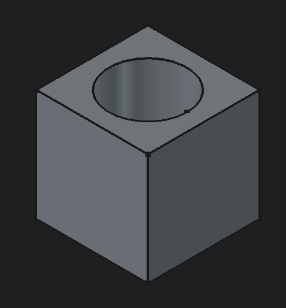
Features are built out using a non-destructive workflow. That means, as features build on top of other features, it's possible to modify earlier features and have the change cascade down to later features. For example, with cylinder-through-box example above, it's possible to go up and change box's dimensions and fillet its corners. The cylinder cut-out feature will still apply.


The core components of the Part Design workbench are bodies and sketches. A body is a model built mostly by transforming 2D sketches into 3D features.
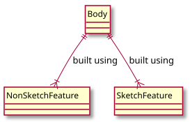
↩PREREQUISITES↩
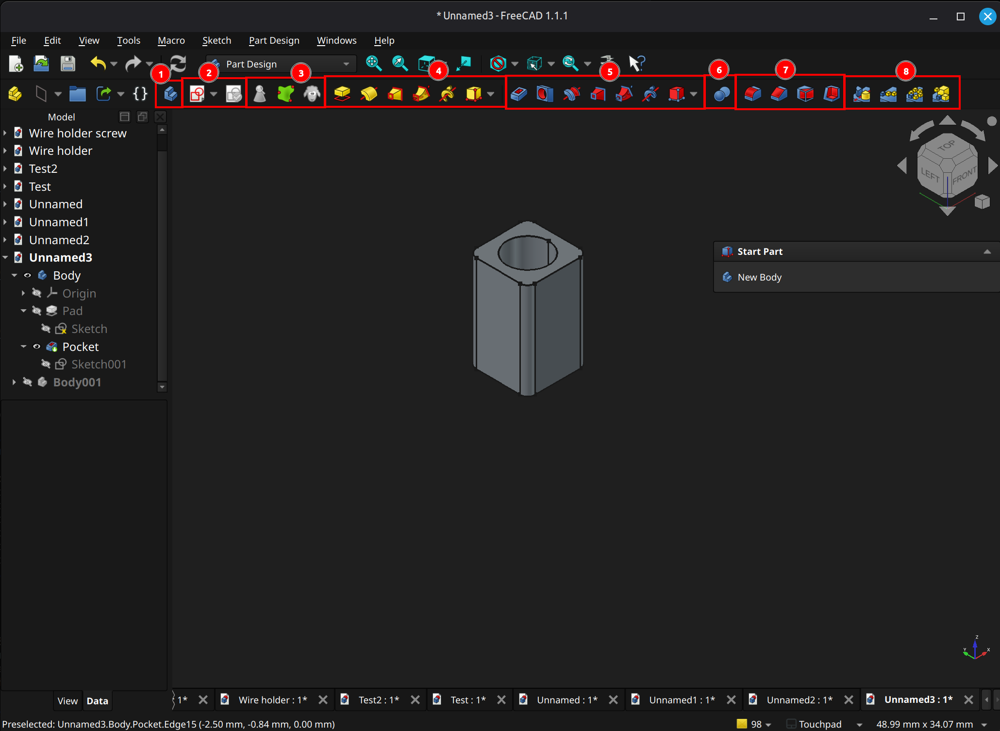
(2) Sketch operations: These toolbar buttons give quick access to sketch functionality. A body can contain multiple sketches, where those sketches are attached on to a plane or an existing face of the model. Those sketches are selectable in the Model pane's tree, and each acts (in whole or partially) as the base for a 3D feature (e.g., pad sketch into 3D).
From left-to-right, ...
Helpers
(3) Helpers: These toolbar buttons provide access to helpful tools. From left-to-right, ...
Modeling Features
(4) Additive features: These toolbar buttons provide access to sketch-to-3D features that add to an object. From left-to-right, ...
(5) Subtractive features: These toolbar buttons provide access to sketch-to-3D features that remove from an object. From left-to-right, ...
(6) Import bodies and apply a boolean operation (e.g., intersection).
(7) Dress-up: These toolbar buttons provide access to some basic non-sketch based features. From left-to-right, ...
Transformation Features
(8) Transformations: These toolbar buttons pattern on or more features. From left-to-right, ...
↩PREREQUISITES↩
The core components of the Part Design workbench are bodies and sketches. Each body typically compounds several sketches into 3D geometry.
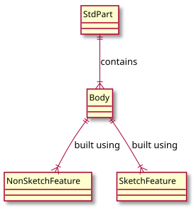
↩PREREQUISITES↩
A body is a single contiguous 3D model, mostly built by compounding several sketches into 3D geometry in a chain. Each item in the chain is referred to as a feature, which is a distinct and editable step in the building of the model.
The list of features nested under a body comprise a non-destructive workflow. For example, a sketch of a square that's 5mm by 5mm can be padded by 10mm to create a rectangular prism. Then, a sketch of a circle with a 3.5mm diameter can be placed on a face of that prism and pocketed to create a cylindrical hole through that cube.
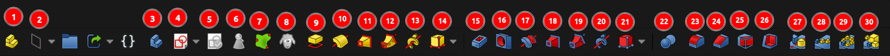
Create
Use toolbar button 3 to create a body. For certain operations, if there is no body, one is implicitly created when the operation runs (e.g., creating a new sketch from the Part Design workbench).
Clone
Use toolbar button 8 to clone the current body selected in the Model pane into a new body. A clone is linked, not copied. That means changing the original changes the clone.
Each body has its own local coordinate system that features nested within it are relative to. The properties of a body define its position and rotation within its parent container. In most cases, that parent container is a standard part_FC, but a body can also live outside of a standard part_FC.

⚠️NOTE️️️⚠️
Axis and angle define rotation - axis defines a vector and angle rotates around that vector.
⚠️NOTE️️️⚠️
An easier way to set the orientation is, in the Model pane, right-click and choose Transform. It sets the same properties highlighted in the above screenshot, but it also provides gizmos in the viewport and a popup pane with more friendly ways to set.
↩PREREQUISITES↩
Sketches are core to building out a body. As such, the Part Design workbench provides quick access to sketching functionality.
Creation
To create a sketch, use toolbar button 4 and select New Sketch. If the 3D viewport has ...
⚠️NOTE️️️⚠️
Sketches cannot be attached to curved faces. The only workaround is to attach a datum plane on that face and center it somehow. That'll allow sketching onto the datum plane and cutting into the face / padding from the face (but you'll need to pad both ways because there'll be gaps between the datum plane and the curved face).
The other option is to use the curves workbench, which allows projecting a sketch onto a curved face.
Once created, the sketch will be entered in Edit mode (Sketcher Workbench will activate). Clicking the Leave Sketch button in the toolbar / clicking the Leave button above the Sketch Edit pane will pop out of the sketch and back into Part Design.
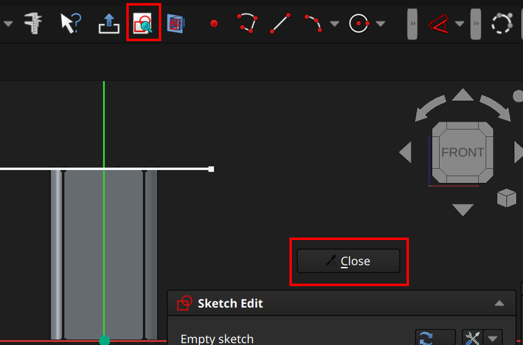
Edit
To edit an existing sketch, select the sketch in the Model pane or 3D viewport, then use toolbar button 4 and select Edit Sketch.
Attach
To attach an existing sketch to something else (e.g., another face), select the thing to attach, then use toolbar button 4 and select Attach Sketch. A dialog will pop-up asking for which sketch to attach, then a subsequent dialog will pop-up asking for the method of attachment (should be Plane face most of the time.)
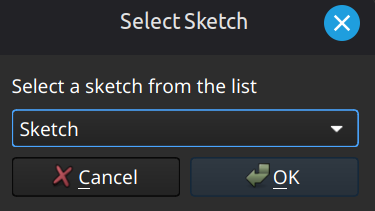
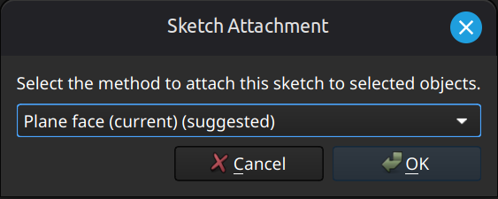
Validate
To validate an existing sketch, select the sketch in the Model pane or 3D viewport, then use toolbar button 5. A Sketch Validation pane should appear wit buttons to test for specific issues.
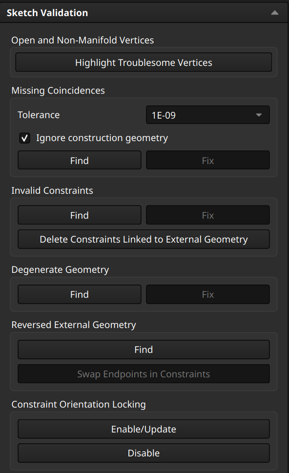
⚠️NOTE️️️⚠️
It's too much work to go through what all these are. At a high-level, it should mostly be self explanatory / you should be able to get it with a quick Google search.
🔍SEE ALSO🔍
In certain cases, a piece of outside geometry may need to be pulled into the body for further manipulation (e.g., a model created using Part workbench - not Part Design workbench - always lives outside of the body). To import that outside geometry into the body, a subshape binder is required:
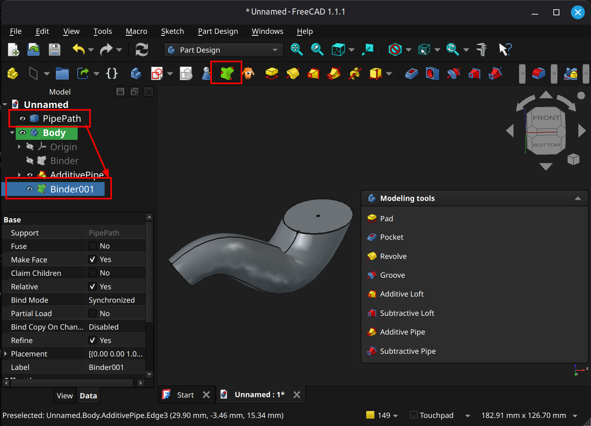
The subshape binders Bind Mode property defines if it copies the original geometry or just links to it:
In addition to subshape binder, geometry may be imported into the body as a base feature object if it's the first step of a body (body is empty). Dragging-and-dropping the object into the empty body within the Model pane results in the base feature object being added.
A base feature object is always a live reference. Changes to the source object are automatically applied to the body.
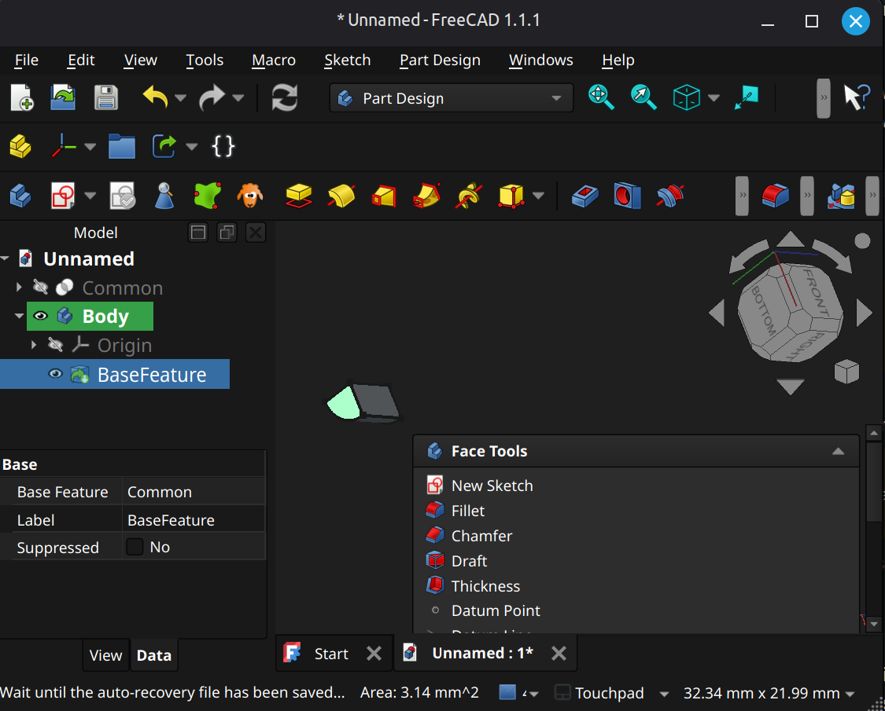
[src] [[self src]](data:text/plain,This%20was%20derived%20using%20self%20experimentation%20-%20there%20is%20no%20source%20other%20than%20myself.)
The subsections below detail feature types supported by the Part Design workbench. Most features present a Preview pane during creation.
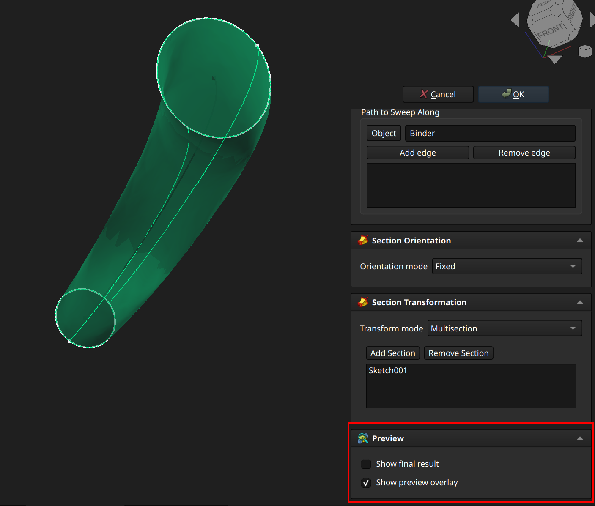
Creation may also insert gizmos during creation that mirror parameters of whatever is being created. The example below has a arrow gizmo to control the depth parameter.
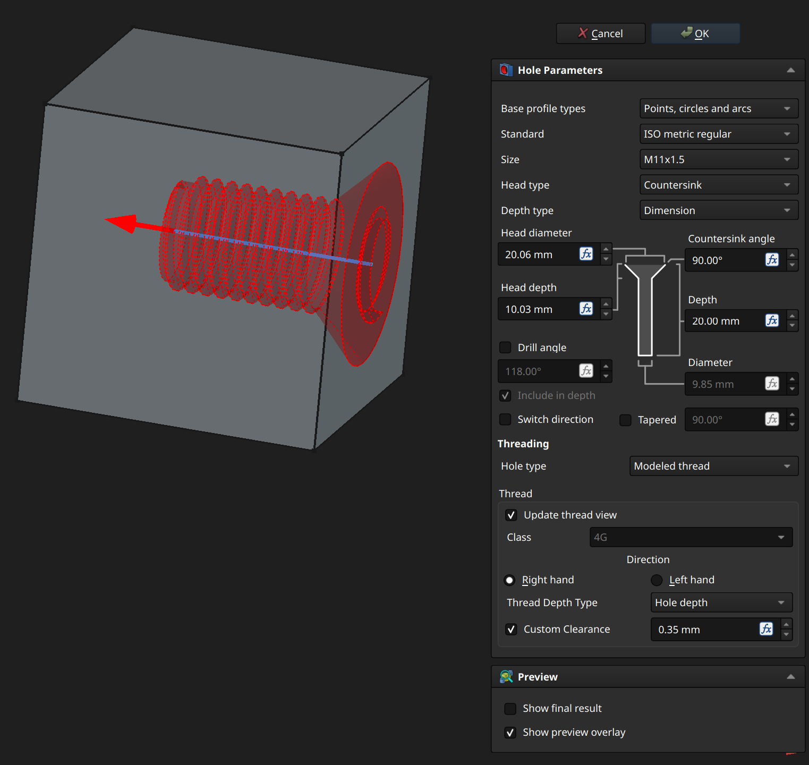
⚠️NOTE️️️⚠️
I suspect this is likely to change in newer versions past 1.1, so I'm leaving this as a note:
For features that are additive (add to the model), the overlay typically shows as green. For features that are subtractive (intersections cut out from the model), the overlay typically shows as red. Some feature overlays, such as chamfers and fillets, the overlay typically shows up as purple.
A pad operation and a pocket operation are effectively the same thing, except that ...
To pad / pocket, select a sketch and use either toolbar button 9 (pad) or toolbar button 15 (pocket). Once selected, gizmos appear in the 3D viewport and a parameter pane opens.
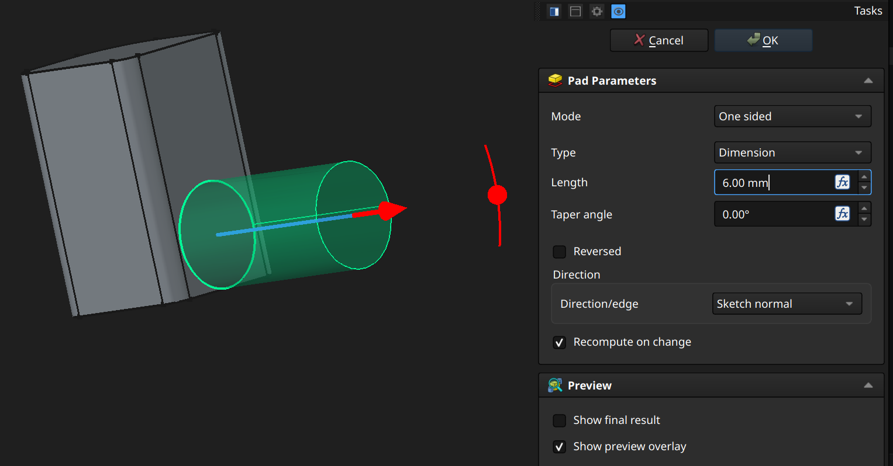
The Mode parameter defines which directions the sketch is extruded in:
One sided and Two sided both enable the Reversed parameter, which reverses direction / directions of extrusion.
The Type parameter defines the stopping point of the extrusion:
⚠️NOTE️️️⚠️
It isn't clearly explained what qualifies as a shape.
The Direction parameter defines the direction of the sketch's extrusion:
A hole operation cuts out a standardized fastener hole from existing geometry it collides with (e.g., hole for a screw or nail).
To create a hole, create a sketch with one or more circles, arcs, and/or points (other entities are ignored). Then, select the sketch and use toolbar button 16. Once selected, gizmos may appear in the 3D viewport and a parameter pane opens.
The Base profile types parameter defines which sketch element types to make into holes:
The Standard and Size parameters define the thread standard to target. For example setting Standard to ISO metric regular and Size to M2x0.4 sets all holes to have a diameter of 2mm and a thread pitch of 0.4mm between peaks.
The Head type parameters defines what type / standard of screw head to model the hole for:
⚠️NOTE️️️⚠️
There are other head types based on standards. As of time of writing, I don't know enough about threading or head standards to fully understand a lot of what's going on here. The documentation also explains almost nothing / it's for an old version of the hole tool.
The Depth type parameter defines where the hole stops:
Below Depth type is a picture that shows the general type of fastener to expect based on the properties chosen (e.g., the type of head, if its got a pointy head). The picture highlights several attributes of the fastener, where those attributes are linked to fields that configure those attributes. For example, in the example screenshot linked to several fields, the ...
The Switch direction parameter reverses the direction of the hole cut-outs.
The Tapered parameter tapers the hole.
The Hole type parameter defines how holes should treat threads:
Clearance / Passthrough makes the hole big enough for the fastener with threads, such that the fastener goes through the hole and threads into something else (e.g., a nut on the other end). Selecting this enables the field Clearance, which controls how loose / tight the hole should be for the fastener.
⚠️NOTE️️️⚠️
Clearance isn't documented anywhere, but when you change it you can see the hole slightly expand / contract.
Tap drill makes the hole a big enough for the fastener without the threads, such that the threads can cut into the hole (e.g., imagine making a pilot hole in a block of wood and then putting a screw in that hole). Selecting this enables the Thread subsection:
⚠️NOTE️️️⚠️
It doesn't look like these parameters do anything for this option? They only seem to do something for the Modeled thread option.
Modeled thread makes the hole include threads, such that the fastener goes in cleanly. Selecting this enables the Thread subsection:
⚠️NOTE️️️⚠️
Update thread view physically inserts the threads into the model, but this lags / slows FreeCAD incredibly. It may be a good idea to leave this disabled until the very end. I suspect you need this enabled when exporting to STL or else the threads won't show up. Documentation doesn't talk about this at all.
Class seems to add some small amount of clearance for ISO types when the class is G. For UTS, I didn't see any value add any clearance. Documentation doesn't talk about this at all.
⚠️NOTE️️️⚠️
There are other head types based on standards. As of time of writing, I don't know enough about threading or head standards to fully understand a lot of what's going on here. The documentation also explains almost nothing / it's for an old version of the hole tool.
[src] [[self src]](data:text/plain,This%20was%20derived%20using%20self%20experimentation%20-%20there%20is%20no%20source%20other%20than%20myself.)
A revolution operation and a groove operation are effectively the same thing, except that ...
To revolve / groove, select a sketch and use either toolbar button 10 (revolution) or toolbar button 17 (groove). Once selected, gizmos appear in the 3D viewport and a parameter pane opens.
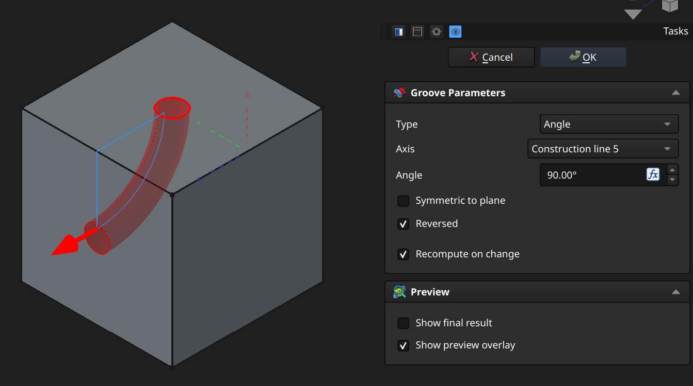
The Type parameter defines which directions the sketch is extruded in:
Angle and Two angle both enable the Reversed parameter, which reverses direction / directions of extrusion.
Angle and Through all both enable the Symmetric to plane parameter, which defines if the plane should be in the middle of the extrusion (extrude half-way outward from the sketch and extrude half-way inward from the sketch). This parameter is only available for Type of Angle.
⚠️NOTE️️️⚠️
Symmetric to plane doesn't make any sense for Through all. Isn't this just the same as a full rotation (360 degrees)?
Axis defines the axis from which the rotation happens:
⚠️NOTE️️️⚠️
In most cases, you should pick planes/faces and sketch such that the horizontal / vertical axis of the sketch is the intended axis to rotate around.
⚠️NOTE️️️⚠️
In a sketch, the elements can't be named. As such, when you select a construction line, it's impossible to know which construction line you're setting. I complained about this here.
An additive loft operation and a subtractive loft operation are the same thing, except that ...
A loft creates a solid by transitioning through sketches that act as slices within the solid. To loft a set of sketches, either ...
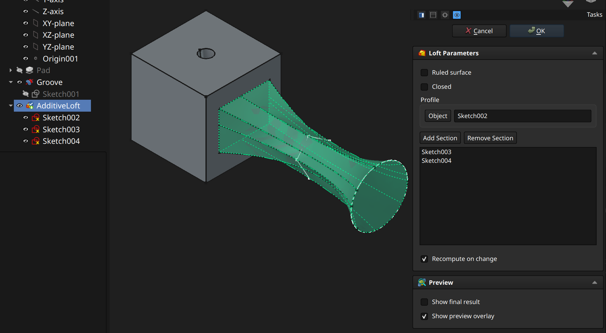
⚠️NOTE️️️⚠️
It's totally unclear / undocumented how loft makes its transitions between sketches. For example, ...
All ChatGPT says is that it delegates to OpenCASCADE.
Notes from source:
A loft's sketches must be spaced out. It's typically for all of a loft's sketches to be attached to the same face / plane, but each offset such there's gaps between them. A sketch can be offset and rotated relative to whatever surface it's attached to using its AttachmentOffset properties.
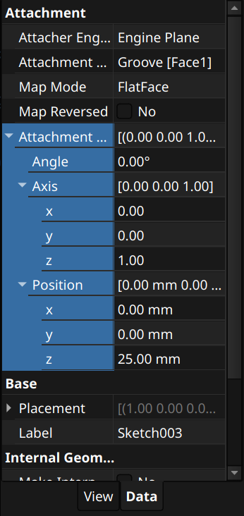
The Ruled surface parameter defines whether transitions between sketches are smooth or straight (straight if checked).
⚠️NOTE️️️⚠️
Documentation says this won't apply to a loft if it only has 2 sketches. I'm not sure why this is.
The Closed parameter makes a transition from the last sketch to the initial sketch, creating a loop.
↩PREREQUISITES↩
An additive pipe operation and a subtractive pipe operation are the same thing, except that ...
A pipe creates a solid by transitioning through sketches in addition to following a chain of one or more paths (e.g., edge, arc, b-spline). To pipe a path and a set of sketches, either ...
use either toolbar button 12 (additive pipe) or toolbar button 19 (subtractive pipe), then ...
select the initial sketch to pipe and the segment to follow, then use either toolbar button 11 (additive pipe) or toolbar button 18 (subtractive pipe). The selection order matters (e.g., first selected the sketch then select the segment).
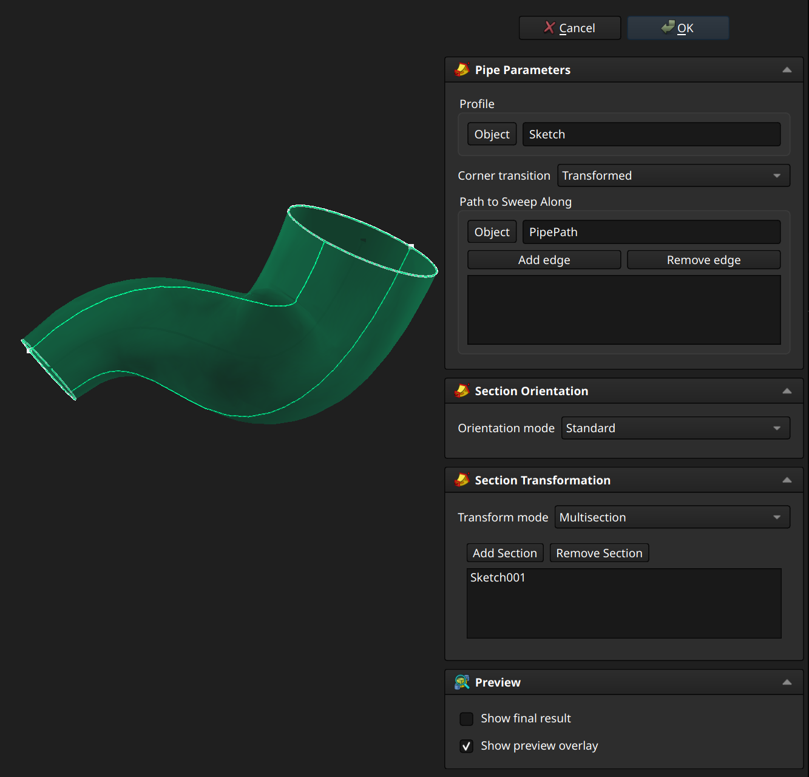
The pipe can transition through multiple paths and many sketches:
A pipe's sketches must be spaced out along the segments that make up the path, and the segments (lines, b-splines, etc..) that make up the path must be connected back-to-back. A common way to structure a pipe is to place sketches along a single b-spline. The b-spline can be created via the Part workbench or programmatically:
import FreeCAD as App
import Part
pts = [
App.Vector(0,0,0),
App.Vector(20,0,10),
App.Vector(40,20,20),
App.Vector(60,10,40),
]
curve = Part.BSplineCurve()
curve.interpolate(pts)
edge = curve.toShape()
wire = Part.Wire([edge])
obj = App.ActiveDocument.addObject("Part::Feature", "PipePath")
obj.Shape = wire
App.ActiveDocument.recompute()
Since the b-spline belongs to the Part workbench rather than the Part Design workbench, it lives outside of the Part Design body where the sketches live. It needs to be imported into that Part Design body using a subshape binder:
Sketches can then be attached to the b-spline by attaching them to that subshape binder. Each attached sketch can be placed somewhere along the b-spline by setting the sketch's Map Path Parameter property (0.0 places at start, 1.0 places at end). The sketch's normal will follow the b-spline's trajectory at the position its at, but can also be further manipulated using the sketch's Attachment Offset property.
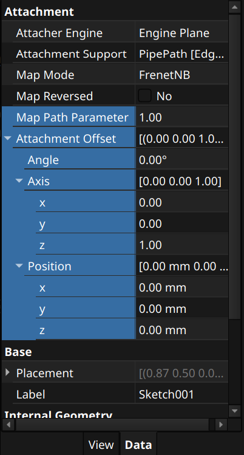
⚠️NOTE️️️⚠️
Much like loft, it's totally unclear / undocumented how pipe makes its transitions between sketches (e.g., which vertexes line up with which vertexes between sketches, what happens when there's more vertexes in one sketch vs the next).
Notes from source:
The Corner transition parameter defines how the path handles hard corners in the path:
The Orientation mode parameter defines how the profile rotates as it sweeps along the path:
⚠️NOTE️️️⚠️
Documentation for the above two properties are sparse.
Documentation says for Fixed, make a circular path so see what it means (it likely means the profile doesn't reorient based on the path and it just sticks with whatever orientation the initial profile sketch had).
An additive helix operation and a subtractive helix operation are the same thing, except that ...
A helix creates a solid by taking a sketch and rotating it up / down some axis, similar to the threads of a screw. To helix a sketch, either ...
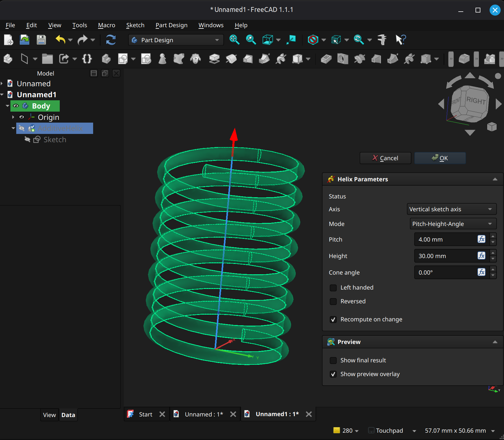
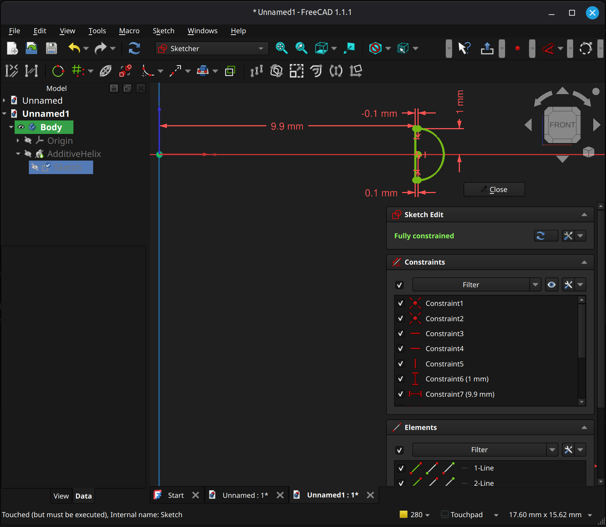
The Axis parameter controls which axis to rotate around.
The Left handed parameter rotates in the opposite direction (to the left rather than the right).
The Reversed parameter flips the ascension in the opposite direction (descends the helix instead).
The Mode parameter defines how the ascension and rotation are configured. The values control which configuration fields show up:
Pitch-Height-Angle
Some other options have a Turns parameter (number of full rotations). Turns is implicitly defined by Pitch and Height (e.g., pitch of 4mm at 8mm high is 2 turns).
Pitch-Turns-Angle
There is no Height parameter here. Height is implicitly defined by Pitch and Turns (e.g., pitch of 4mm at 2 turns is 8mm high).
Height-Turns-Angle:
There is no Pitch parameter here. Pitch is implicitly defined by Height and Turns (e.g., height of 8mm at 2 turns implies a pitch of 4mm).
Height-Turns-Growth:
There is no Pitch parameter here. Pitch is implicitly defined by Height and Turns (e.g., height of 8mm at 2 turns implies a pitch of 4mm).
There is no Angle parameter here. Angle is implicitly defined by Growth (translates the widening per turn to an angle).
⚠️NOTE️️️⚠️
In the screenshot example, the sketch defines the helix's thread as well as the rotational cylinder's radius. Note how the sketch is 9.9mm out from the center and Axis is set to Vertical sketch axis, meaning the radius of the helix is 9.9mm.
If your helix follows a similar setup, unless you already have a face to attach to or want the helix at the origin, it may be a good idea to place a datum plane in the desired location and use it to sketch out a helix.
To place a datum plane matching the face's orientation but with a specific origin:
Place a sketch on the face with ...
Create a new datum plane and use the center point as reference 1, the horizontal line as reference 2, and the vertical line as reference 3
Set Attachment mode to Align O-X-Y.
Place a sketch to new datum plane. The origin will be the center point.
🔍SEE ALSO🔍
⚠️NOTE️️️⚠️
To place a datum plane normal to the face's orientation, same steps as above but Attachment mode should be either Align O-N-Y or Align O-Y-N.
An additive primitive and a subtractive primitive operation are the same thing, except that ...
A primitive is a primitive piece of 3D geometry (e.g., cube, sphere, torus). To create a primitive, use either toolbar button 14 (additive primitive) or toolbar button 21 (subtractive primitive) to show a drop-down of primitive types and select. Once selected, a Primitive Parameters pane will appear that defines the shape as well as a Select Attachment pane that defines how and what it attaches to. For full details, see sources.
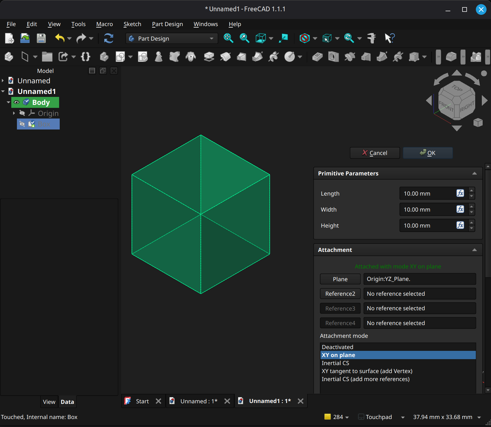
[src] [src] [src] [src] [src] [src] [src] [src] [src] [src] [src] [src] [src] [src] [src] [src]
Fillet / chamfer cuts into a edge. A fillet's cut is rounded while a chamfer's cut is straight.
To apply fillet/chamfer, select relevant faces and edges and use either toolbar button 23 (fillet) or toolbar button 24 (chamfer).
⚠️NOTE️️️⚠️
Fillets and chamfers are notoriously brittle for non-destructive workflows. For example, if you add a fillet/chamfer but then make a modification in a previous step of the non-destructive workflow, the fillet/chamfer will fail. The edges will have changed and fillet/chamfer typically isn't able to automatically guess what the new edges are.
For this reason, I've seen only that they recommend leaving fillet/chamfer operations until the very end.
Tested on FreeCAD 1.1.1.
A Fillet Parameters / Chamfer Parameters pane will pop open. To add edges/faces, click Select, select the edges/face, and then click Confirm Selection. To remove edges/faces, click on the edge/face in the list and press Del.
For fillet, use the Radius field or the gizmos to set the radius of the curve.

For chamfer, use the Type or the gizmos to define how steep the the cut is:
⚠️NOTE️️️⚠️
When sides aren't equal, unsure how it picks which side is which.
⚠️NOTE️️️⚠️
Draft looks to be broken for custom curves outsides of shapes derived from conics (e.g., spheres, half spheres, cylinders). Anything that involves a custom curved face won't work.
Draft adds an angle to one or more faces.
To apply draft, select relevant faces and use either toolbar button 25.
A Draft Parameters pane will pop open. To add faces, click Select, select the face, and then click Confirm Selection. To remove faces, click on the face in the list and press Del.
The Draft angle field sets the angle to offset the faces (can be negative).
The Neutral Plane field sets the plane in which the edge must be anchored (won't lift or sink). To set, click the button and select a face. In the example above, the neural plane is the top face. The 4 sides which have draft applied fan out toward the bottom because the top edges are locked in place.
The Pull Direction field sets the direction in which the angle is applied. To set, click the button and select an edge (or something edge-like, like a datum line?).
⚠️NOTE️️️⚠️
I think Pull Direction is the normal of the face by default. Here's what the source says:
Set the the pull direction by pressing the Pull direction button, then select an edge. Pull Direction is only effective if the Neutral Plane has been set. Results can be unpredictable.
↩PREREQUISITES↩
⚠️NOTE️️️⚠️
Thickness looks to be broken for custom curves outsides of shapes derived from conics (e.g., spheres, half spheres, cylinders). Anything that involves a custom curved face won't work.
One thing I've tried doing that may work in some cases where thickness fails is a subtractive loft. You take profile sketches and punch through the solid. You may need to do multiple such subtractive lofts to get what you're hoping for.
Thickness removes one or more faces and cuts out the inside of the object, giving it a bowl-like / shell-like effect.
To apply thickness, select relevant faces and use toolbar button 26.
A Thickness Parameters pane will pop open. To add faces, click Select, select the face, and then click Confirm Selection. To remove faces, click on the face in the list and press Del.
The Thickness field sets the thick the shell is. If Make thickness inwards is clicked, the original outline is kept but hollowed out vs padding the original outline to generate the shell.
The Mode field must be set to Skin.
⚠️NOTE️️️⚠️
According to the source, the only option implemented for Mode is Skin and you shouldn't be selecting anything else. See source for more information.
The Join type field defines how non-tangential faces of the shell are joined together:
The Intersection checkbox avoids self-intersection in some models.
⚠️NOTE️️️⚠️
According to the source, it's recommended to leave the Intersection checkbox unchecked because it relies on some unimplemented methods in a dependent library. See source for more information.
Boolean moves one or more outside bodies into the active body and performs a boolean/set operation (union, intersection. subtraction).
To apply boolean, select relevant faces and use toolbar button 22. A Boolean Parameters pane will pop open.
To move a body into the active body, click Add Body and select the body. To move an added body back out, click Remove Body and select the body in Model pane.
The drop-down below the list of added bodies is the operation to perform:
⚠️NOTE️️️⚠️
You almost always will need to move and reorient the body when you're doing boolean operations like this.
🔍SEE ALSO🔍
Mirror copies either the entire body or specific features across a plane.
To apply mirror, use toolbar button 27. A Mirror Parameters pane will pop open.
Select Transform body for mirroring of the full model or Transform tool shapes to mirror specific features. If Transform tool shapes is selected, for each feature to mirror, click Add Feature and select the feature in the Model pane. Likewise, remove a feature being mirror by clicking Remove Feature and selecting the feature in the Model pane.
⚠️NOTE️️️⚠️
Does order of the selected features matter? A safe bet is likely to add features in the same order.
The Plane field selects the plane across which mirroring happens:
🔍SEE ALSO🔍
⚠️NOTE️️️⚠️
It looks like the safest bet is to build your own datum plane. To place a datum plane perpendicular to some face's orientation, ...
Instead of a sketch with points, you can also try placing 3 datum points on the face's edges, moving those datum points using the Map Path Property (it's hidden in the properties tab - you need to right click and show hidden properties).
Polar pattern copies either the entire body or specific features, multiple times around an axis.
To apply polar pattern, use toolbar button 29. A Polar Pattern Parameters pane will pop open.
Select Transform body for patterning of the full model or Transform tool shapes to pattern specific features. If Transform tool shapes is selected, for each feature to mirror, click Add Feature and select the feature in the Model pane. Likewise, remove a feature being mirror by clicking Remove Feature and selecting the feature in the Model pane.
⚠️NOTE️️️⚠️
Does order of the selected features matter? A safe bet is likely to add features in the same order.
The Axis field selects the axis across which copying happens:
⚠️NOTE️️️⚠️
It may be best to use a datum line here. Create a sketch on the face, put the point that the datum line should pass through (make sure to fully constrain it by locking it into place or using projected construction geometry), exit the sketch, and insert a datum line referencing the point and the face using attachment mode "Normal to surface".
🔍SEE ALSO🔍
When Mode is ...
Linear pattern copies either the entire body or specific features, multiple times in a straight line.
To apply linear pattern, use toolbar button 28. A Linear Pattern Parameters pane will pop open.
Select Transform body for patterning of the full model or Transform tool shapes to pattern specific features. If Transform tool shapes is selected, for each feature to mirror, click Add Feature and select the feature in the Model pane. Likewise, remove a feature being mirror by clicking Remove Feature and selecting the feature in the Model pane.
⚠️NOTE️️️⚠️
Does order of the selected features matter? A safe bet is likely to add features in the same order.
The Direction area selects the line across which copying happens:
⚠️NOTE️️️⚠️
It may be best to use a datum line here. Create a sketch on the face with a line (make sure to fully constrain it by locking it into place or using projected construction geometry).
When Mode is ...
The Direction 2 checkbox displays a second Direction area, which is used to copy the copies from the first direction area. In the example screenshot, the first direction area produces 3 holes upward, while the second direction area places 3 copies of those 3 holes across, totalling 9 holes.
↩PREREQUISITES↩
Multi-transform is a container that can apply a chain of linear pattern, polar pattern, and mirror features. In addition, it can apply scaling to copies produced by these features.
To apply multi-transform, either ...
⚠️NOTE️️️⚠️
If you're importing: I suspect the selection has to be made in order to be added? Also each selection must to target the exact same set of features added in the exact same order?
A Multi-Transform Parameters pane will pop open.
Select Transform body for patterning of the full model or Transform tool shapes to pattern specific features. If Transform tool shapes is selected, for each feature to mirror, click Add Feature and select the feature in the Model pane. Likewise, remove a feature being mirror by clicking Remove Feature and selecting the feature in the Model pane.
⚠️NOTE️️️⚠️
Does order of the selected features matter? A safe bet is likely to add features in the same order.
Right-click inside the Transformations list to add, delete, edit, and reorder transformations. The Scale transformation takes copies made in the previous transformation and applies compound scaling (e.g., first copy is 2x scaled, second copy, 3x scaled, etc..), as shown in the example. For copies of the body, this may work as intended. For copies of features, this may not work as intended (e.g., in the example screenshot, notice that the pockets don't seat on the face as they scale).
↩PREREQUISITES↩
Part workbench allows building a 3D object through a hierarchy of transformations. In contrast to the part design workbench, the part workbench ....
The core components of the part workbench are geometry objects and compounds (compounds are a grouping of geometry objects, treated as a single piece of geometry). The workflow is to build out more complex pieces of geometry through transformations: Multiple pieces of existing geometry into one or more pieces of new geometry (e.g., boolean intersection, converting two 2D lines to a ruled surface, sweeping over profiles).
↩PREREQUISITES↩
Geometry Creation
(1) Geometry creation: These toolbar buttons create standard geometry out of nothing other than user parameters. Geometry may be solids, surfaces, of profiles (e.g., 2D coplanar geometry). From left-to-right, ...
(3) Create a sketch (either on plane or face).
Geometry Transformation
(2) Shape Builder: Creates complex shapes from geometric primitives.
(4) Basic transformations: These toolbar buttons create manipulate and transform geometry. From left-to-right, ...
(5) Boolean operations: These toolbar buttons transform multiple pieces of geometry. From left-to-right, ...
(7) Defeaturing: Removes certain features of a 3D object (e.g. holes, chamfers, edges_FC), to fix defects and simplify.
Helpers
↩PREREQUISITES↩
The core components of the Part workbench are geometry and compounds. A compound object is a grouping of a geometry objects, treated as a single geometry object.
A geometry object could be ...
🔍SEE ALSO🔍
[[self src]](data:text/plain,This%20was%20derived%20using%20self%20experimentation%20-%20there%20is%20no%20source%20other%20than%20myself.)
↩PREREQUISITES↩
A geometry object contains some geometry and has a local coordinate system to place and orient it in relation to the parent's coordinate system.
[[self src]](data:text/plain,This%20was%20derived%20using%20self%20experimentation%20-%20there%20is%20no%20source%20other%20than%20myself.)
↩PREREQUISITES↩
A compound object is a set of geometry objects brought together under a single container, where that container itself is a geometry object. This is not a boolean union - objects aren't merged in together.
⚠️NOTE️️️⚠️
How is this different from a standard part_FC? Standard part_FC is a container that holds multiple geometry objects but itself isn't geometry, while compound is? The source mentions that the compound has a "topological shape".
⚠️NOTE️️️⚠️
The source says compounds can't include meshes?
↩PREREQUISITES↩
A profile is a set of geometry that's 2D and coplanar: Sketches, 2D primitive shapes (e.g., circle, square, ellipse), a set of connected coplanar edges/wires that may or may not be closed (e.g., 3 wires forming a U shape is not closed). Profiles often go on to be to generate faces, and surfaces, and 3D objects (e.g., 2 edges can generate a ruled surface, a loft can generate a 3D object or curved surface).
⚠️NOTE️️️⚠️
A profile isn't a container / distinct type of object, but it's referred to multiple times throughout the wiki and is required by several operations, and so I thought it'd be good to add it in the organization.
[[self src]](data:text/plain,This%20was%20derived%20using%20self%20experimentation%20-%20there%20is%20no%20source%20other%20than%20myself.)
↩PREREQUISITES↩
Part Design Workbench to Part Workbench
A part design body can naturally be operated on by the part workbench. For example, the part workbench can boolean union a body with a cube generated from within the part workbench.
⚠️NOTE️️️⚠️
Does a body qualify as a geometry object similar to other part workbench objects? Is that why?
Part Workbench to Part Design Workbench
A part workbench object cannot naturally be operated on by the part design workbench. The object must be pulled into the body either using a subshape binder or as a base feature.
⚠️NOTE️️️⚠️
The source seems to discourage swapping between workbenches, but sometimes it's unavoidable? Should be fine.
[src] [[self src]](data:text/plain,This%20was%20derived%20using%20self%20experimentation%20-%20there%20is%20no%20source%20other%20than%20myself.)
Include anything that builds solids
Mirror, revolve, pad
Thickness / 2D offset / 3D offset
↩PREREQUISITES↩
Assembly workbench allows linking individual models by specifying how they fit and move together. For example, a piston and its enclosure can be linked together such that piston moves up and down its enclosure.
The core component of the assembly workbench is the joint. A joint positions and restricts the degrees of freedom a model has in relation to some other model.
↩PREREQUISITES↩
(7) Joint types: These toolbar buttons give quick access to joints functionality. From left-to-right, ...
↩PREREQUISITES↩
The core pieces of the assembly workbench are components and joints. A component is an app link to either a model or a standard part_FC containing a group of models. A joint is a linkage between components that restricts its positioning, orientation, and / or movement (e.g., restricts its degrees of freedom). For example, a slider joint locks one component to another, restricting its movement such that it can only slide along some axis on that / derived from that component.
↩PREREQUISITES↩
An assembly is a container of that ties together models (e.g., bodies, standard parts_FC containing bodies) with joints, defining how those models move in relation to each other. An assembly can also contain sub-assemblies. A sub-assembly is an assembly that's nested within another assembly.
To create an assembly, use toolbar button 1 (keyboard shortcut A). Assemblies can be created at the top-level, within an existing assembly (in which case it's referred to as a sub-assembly), or even within a standard part_FC.
[src] [src] [[self src]](data:text/plain,This%20was%20derived%20using%20self%20experimentation%20-%20there%20is%20no%20source%20other%20than%20myself.)
↩PREREQUISITES↩
A component is a non-joint object within an assembly (e.g., body, standard part_FC, sub-assemblies).
To insert a component, use toolbar button 2 and select Component (keyboard shortcut I). An Insert pane should appear with options to insert one or more components or sub-assemblies.
Clicking objects in the drop-down imports them into the assembly. Importable objects include models, standard parts_FC, and assemblies (become sub-assemblies in the assembly being imported into). Each object imported is imported as a reference as opposed to a copy, meaning changes in the source will reflect in the assembly.
Above the list is a text field that filters items in the list.
Below the field is ...
⚠️NOTE️️️⚠️
Rigidness of sub-assemblies can be toggled in the Properties pane, under General → Rigid.
If the object being imported is the first object, a prompt will show up asking if the object should be locked into place with a grounded joint. An assembly needs at least one grounded joint on which other joints and objects are anchored.
A component can be moved by left mouse button dragging in the 3D viewport. If movement is constrained by joints, only allowed movements are applied during dragging.
If a component is not constrained by joints, selecting it presents a gizmo that can be used to move it around. A sub-assembly that's rigid is always moved as a whole, while a sub-assembly that isn't rigid can have its individual components separated and moved.
⚠️NOTE️️️⚠️
It looks like the individual components of a non-rigid sub-assembly seem to snap back into place once a grounded joint is applied?
[src] [src] [src] [[self src]](data:text/plain,This%20was%20derived%20using%20self%20experimentation%20-%20there%20is%20no%20source%20other%20than%20myself.)
A joint constrains the movement of one or more components, often relative to each other.
There are many types of joints, starting from toolbar button 7 onward. An assembly needs at least one grounded joint on which other joints and objects are anchored.
Each individual joint type is documented in further detail in sections further down.
⚠️NOTE️️️⚠️
A core mistake people often make with joints is thinking that they can be compounded. A joint removes all but some options for movement. That's why if you try to place a sliding joint and a revolute joint on the same pair of objects, they cancel each other out.
The sliding joint won't let the revolute joint revolve, and the revolute joint won't let the sliding joint slide. See here.
[src] [src] [[self src]](data:text/plain,This%20was%20derived%20using%20self%20experimentation%20-%20there%20is%20no%20source%20other%20than%20myself.)
A frame binds a component's element (e.g., face, plane, vertex) to a joint, providing that element with its own local coordinate system. A joint restrict the movement of its frames (and thereby the components those frames are attached to) based on that joint's type and parameters.
A frame is visualized in the viewport as a white transparent disc:
The joint in the example below is a sliding joint. A sliding joint has two frames, restricted such that the frames are parallel to each other and the only movement/rotation change allowed is sliding up-and-down the z-axis.
⚠️NOTE️️️⚠️
A frame isn't something you explicitly add. It's there wherever a joint is paired to a component element.
↩PREREQUISITES↩
The subsections below detail joint types supported by the assembly workbench. Most joints present a configuration pane during creation with a constant subset of options.
(1) Joint type: Joint being applied. The joint type can be changed by using this drop-down. Some joints types may not be available (e.g., grounded joint).
⚠️NOTE️️️⚠️
Sometimes, changing this value doesn't work. The joint will show up as the selected type but it won't be applied.
Noted in v1.1.1.
(2) Model elements: Model elements (e.g., faces, edges, vertices) which the joint applies to.
(3) Configuration: Configuration options for the select joint type. Options differ per joint type.
(4) Isolate: Controls how unrelated components appear when the joint is selected:
When offset and rotation parameters don't specify a relation (as in the example above), many joint types apply it to the z-axis of one of their frame's local coordinate systems. In the example above, the offset parameter of 7mm is applied to the second frame's local coordinate system's z-axis.
Often times, it's possible to offset and rotate in more directions by selecting Show advanced offsets (or some equivalent checkbox / button). In the example above, selecting Show advanced offsets replaces the Offset and Rotation fields with Offset1 and Offset2. These new fields directly control the offset and rotation for their respective frames's local coordinate system.
⚠️NOTE️️️⚠️
It sounds like what's happening here is that when you go to create a joint, it attaches to a frame to each of the component elements you've selected (it centers them?).
The translation/rotation adjustments move the component relative to the frame it's attached to:
That is, the frameS stays in place, but the component it's attached to moves around (e.g., translates out 5mm and rotates over Z-axis by 45 degrees).
I suppose it's like this because you can't position and rotate frames. You select the element and a frame gets attached to it at some place on the element in some orientation, and it's your responsibility to adjust the translation and rotation to ensure it's as expected?
[src] [[self src]](data:text/plain,This%20was%20derived%20using%20self%20experimentation%20-%20there%20is%20no%20source%20other%20than%20myself.)
A grounded joint locks the location and orientation of an assembly piece. A non-empty assembly needs to have at least one grounded joint.
To apply a grounded joint, select the component and select toolbar button 7 (keyboard shortcut G). Doing this multiple times toggles the grounded joint on and off.
Once a grounded joint is applied, a red lock will appear over the piece.
↩PREREQUISITES↩
A fixed joint locks one component onto another component, preventing any movement or rotation.
To apply a fixed joint, either ...
⚠️NOTE️️️⚠️
Options not described here are described in the parent section.
↩PREREQUISITES↩
A revolute joint allows the rotation of one component around another component using the shared z-axis between both frames. All other movements and rotations are restricted.
To apply a revolute joint, either ...
A revolute joint lines matches up both frames and rotates around the shared z-axis.
⚠️NOTE️️️⚠️
Options not described here are described in the parent section.
⚠️NOTE️️️⚠️
There's a bug in 1.1.1 (and maybe other versions) where angles < 180 or > 180 roll over. Sometimes that's a problem because it can only target the interior angle range instead of the exterior angle range (or vice versa - I forget). You can workaround the bug by going into the joint's properties and setting Limits → Angle Min / Angle Max.
↩PREREQUISITES↩
A slider joint allows the sliding of one component along another component using the shared z-axis between both frames. All other movement and rotation are restricted.
To apply a slider joint, either ...
⚠️NOTE️️️⚠️
Options not described here are described in the parent section.
↩PREREQUISITES↩
A cylindrical joint is a combination of the slider joint and revolute joint. Both sliding and rotation are allowed (matching the allowed movement/rotation of both slider joint and revolute joint), but all other movements and rotations are restricted.
To apply a cylindrical joint, either ...
⚠️NOTE️️️⚠️
Options not described here are described in the parent section.
⚠️NOTE️️️⚠️
There's a bug in 1.1.1 (and maybe other versions) where angles < 180 or > 180 roll over. Sometimes that's a problem because it can only target the interior angle range instead of the exterior angle range (or vice versa - I forget). You can workaround the bug by going into the joint's properties and setting Limits → Angle Min / Angle Max.
⚠️NOTE️️️⚠️
A core mistake people often make with joints is thinking that they can be compounded. A joint removes all but some options for movement. That's why if you try to place a sliding joint and a revolute joint on the same pair of objects, they cancel each other out.
The sliding joint won't let the revolute joint revolve, and the revolute joint won't let the sliding joint slide. See here.
↩PREREQUISITES↩
A ball joint allows the movement of one component relative to another component so long as the center of those components's frames are touching.
To apply a ball joint, either ...
⚠️NOTE️️️⚠️
Options not described here are described in the parent section.
↩PREREQUISITES↩
A distance joint allows the movement of one component relative to another component so long as the distance between them is some constant.
To apply a distance joint, either ...
⚠️NOTE️️️⚠️
Options not described here are described in the parent section.
⚠️NOTE️️️⚠️
There's a bug in 1.1.1 (and maybe other versions) where you have to select component elements in a certain order or certain way, otherwise this joint won't work?
↩PREREQUISITES↩
A parallel joint allows the movement of one component relative to another component so long as those components's frames have parallel planes.
To apply a parallel joint, either ...
⚠️NOTE️️️⚠️
Options not described here are described in the parent section.
↩PREREQUISITES↩
A perpendicular joint allows the movement of one component relative to another component so long as those components's frames have perpendicular planes.
To apply a perpendicular joint, either ...
⚠️NOTE️️️⚠️
Options not described here are described in the parent section.
↩PREREQUISITES↩
An angle joint allows the movement of one component relative to another component so long as those components's frames have normals at some constant angle.
To apply a angle joint, either ...
⚠️NOTE️️️⚠️
Options not described here are described in the parent section.
↩PREREQUISITES↩
A rack and pinion joint ties together a slider joint and a revolute joint, such that rotation of that revolve joint results in sliding of the slider joint and vice versa. This gives the impression of a cog/pinion moving across a rack.
Prior to applying a rack and pinion joint, ensure that ...
To apply a rack and pinion joint, either ...
One element must be on a component that is sliding (e.g., the rack), while the second element must be on the revolving component (e.g., pinion). The normals of the 2 frames must be perpendicular to each other (blue lines must be 90 degrees).
Pitch radius: The contact radius of the revolving component against the rack component.
⚠️NOTE️️️⚠️
Options not described here are described in the parent section.
⚠️NOTE️️️⚠️
If the pitch radius is 0, it'll crash once you try to move it? Noticed in FreeCAD 1.1.1.
⚠️NOTE️️️⚠️
What does pitch / contact radius mean? Imagine you have a wheel with spokes rotating similar to the one in the example above, but the shape the sliding bar's indents were tapered down such that the teeth of the wheel can't fit all the way till they touch the bottom of the indent. The distance from the wheel's center to that touching point is the pitch radius.
⚠️NOTE️️️⚠️
For effective use of this joint type, you'll likely need to use helper geometry: Datum points, datum planes, local coordinate systems, and sketch elements. Note the use of helper geometry in the second example screenshot above: The grounded joint is a body with nothing but a sketch line on the z-axis and a sketch line on the x-axis. The revolve joint is using one of those lines as its revolving axis, and the slider joint is using the other line as the sliding axis.
↩PREREQUISITES↩
A screw joint ties together a slider joint and a revolute joint, such that sliding the slider joint revolves the revolute joint. This gives the impression of a screw turning as it goes down.
Prior to applying a screw joint, ensure that ...
To apply a screw joint, either ...
One element must be on a component that the sliding joint is sliding in/out of (e.g., screw hole), while the second element must be on the revolving component (e.g., screw). The normals of the 2 frames must be pointing at each other (blue lines must be facing each other).
Once applied, sliding will also result in revolving.
⚠️NOTE️️️⚠️
Not vice versa? Manual revolving doesn't seem to work?
⚠️NOTE️️️⚠️
Unlike most other joints, it looks like you have to actually apply this before you're able to slide and see the revolutions happening. If it hasn't been applied yet, it'll be locked?
Thread pitch: The thread pitch of the revolving component representing the screw (distance the screw advances in 1 full turn).
⚠️NOTE️️️⚠️
Options not described here are described in the parent section.
⚠️NOTE️️️⚠️
For effective use of this joint type, you'll likely need to use helper geometry: Datum points, datum planes, local coordinate systems, and sketch elements. Note the use of helper geometry in the example screenshot above: What's sliding in-and-out of the screw hole is a sketch line, and the circle on the screw head is a sketch circle placed on the face of the screw
A gear / belt joint ties two revolute joints together, such that revolving one automatically revolves the other. This gives the impression of one gear moving another. A gear joint revolves in opposite directions while a belt joint revolves in the same direction.
Prior to applying a gear / belt joint, ensure that there two components each with a revolute joint whose frame normal points in the same direction / opposite direction. To apply a gear / belt joint, either ...
⚠️NOTE️️️⚠️
What happens if the frame normals are in opposite directions? Will it rotate in the opposite direction when you intended it to rotate in the same direction?
Reverse rotation: Swaps the joint type between Gears and Belt. The only difference between them is if the direction is reversed
⚠️NOTE️️️⚠️
Options not described here are described in the parent section.
⚠️NOTE️️️⚠️
For effective use of this joint type, you'll likely need to use helper geometry: Datum points, datum planes, local coordinate systems, and sketch elements. Note the use of helper geometry in the example screenshot above: The two gears are each rotating around a sketch line. Those 2 sketch lines are on the same sketch, which is in a body that has a grounded joint applied.
[src] [src] [[self src]](data:text/plain,This%20was%20derived%20using%20self%20experimentation%20-%20there%20is%20no%20source%20other%20than%20myself.)
↩PREREQUISITES↩
An exploded view of an assembly is the components of that assembly fanned out, for presentation purposes.
⚠️NOTE️️️⚠️
One of the sources mentions that exploded views are imported into the techdraw workbench, where they can be further annotated and printed.
To create an exploded view, select toolbar button 4 (keyboard shortcut E). An Explode Views pop-out will appear in addition to a !!Exploded_Views!! container. An assembly can hold multiple exploded views, all all of which live under that assembly's single Exploded_Views container.
The list within the Exploded Views pop-out is a sequence of move operations. There are multi ways to move:
Selecting a single component in the 3D viewport exposes a gizmo which can move and rotate that component. Each move on a component generates a single "Move" item in the list along with a dashed red line tracing that move, as shown in the example above.
Selecting multiple components in the 3D viewport exposes a single gizmo which can move and rotate those components in tandem. Each move on the set of components generates a single "Move" item in the list (e.g., even though multiple components are being moved, a single "Move" item is generated) along with multiple dashed red line tracing the moves of the individual components.
Clicking Explode Radially exposes a single gizmo at the center of the assembly which can move and rotate all components in tandem. Moving fans out the components circularly. Each move on the set of components generates a single "Move" item in the list (e.g., even though multiple components are being moved, a single "Move" item is generated) along with multiple dashed red line tracing the moves of the individual components.
Align dragger to...: Moves the gizmo to a different location, such as the origin, center, or to a specific component if multiple components are selected for moving.
Parts as a single solid: Treats components that are standard parts_FC as a single solid.
[src] [src] [[self src]](data:text/plain,This%20was%20derived%20using%20self%20experimentation%20-%20there%20is%20no%20source%20other%20than%20myself.)
↩PREREQUISITES↩
A bill of materials (BOM_FC) of an assembly is the list of that assembly's components as well as optionally its sub-components, such as sub-assemblies and the constituent pieces of a standard part_FC.
To create an BOM_FC, select toolbar button 6 (keyboard shortcut O). A Bill of materials pop-out will appear.
Sub-assemblies children: If selected, includes children of sub-assemblies in the BOM_FC.
Parts children: If selected, includes children of standard parts_FC in the BOM_FC.
Only parts: If selected, includes only standard parts_FC and sub-assemblies in the BOM_FC, skipping other objects (e.g., bodies).
Columns: Columns to be included in the BOM_FC. New columns can be added by clicking the Add Column button, which injects a text field into the list to be filled out. A column will target an object property if it starts with with a period. For example, .Visibility pulls in the Base.Visibility property from each listed object's data properties.
⚠️NOTE️️️⚠️
The example property above exists for nearly all 3D objects, found in the Model pane's data properties section. It might not appear because it's hidden - right-click and select "Show hidden" to see it.
⚠️NOTE️️️⚠️
I've tried targeting properties outside of Base. It doesn't seem to work. The only properties you can target seem to be those under Base. Note that you can inject custom properties by right-clicking in the properties and selecting Add Property, and then pull in that custom property to a BOM_FC column.
Clicking OK generates the spreadsheet containing the BOM_FC. If the active object is an assembly, the BOM_FC is generated for that assembly under a Bill_of_Materials container. Otherwise, the BOM_FC is generated as a top-level objects for all assemblies in the document (one BOM_FC covering all assemblies).
Similarly, clicking Export saves the BOM_FC as a tab-separated text file (TSV).
⚠️NOTE️️️⚠️
The source says selected object, but I wrote active object. From experimentation I think it means active object. Selecting an assembly that's not activated and generating a BOM_FC doesn't put that BOM_FC under the assembly.
[src] [[self src]](data:text/plain,This%20was%20derived%20using%20self%20experimentation%20-%20there%20is%20no%20source%20other%20than%20myself.)
↩PREREQUISITES↩
A simulation updates the motion state of one or more of an assembly's joints across some duration of time, resulting in simulated movement. The motion state of the joint is a function of time elapsed (e.g., for a duration of 5 seconds, a revolute joint's angle should be 5*time).
To create an simulation, select toolbar button 7 (keyboard shortcut V). A simulation gets placed under the assembly's Simulations container and a Simulations pop-out will appear.
Motions: The joints to which motion are to be applied to. To add a joint, use the green plus button to open a selection pop-out.
Use Joint to target the joint to apply motion to, and Motion type to apply the target the type of motion. Some joints support multiple types of motion (e.g., a cylindrical joint supports both sliding and rotating), but most joints only support one type of motion.
Formula is the expression used to update the motion state of the joint. The motion is a function of time elapsed across a duration (e.g., for a duration of 5 seconds, a revolute joint's angle should be 5*time). The Help button extends the pop-out to give examples of formulas.
Simulation Settings: The duration and cadence across which motion occurs:
Start / Stop: Duration, specified as a start and stop time. Step: How often to update the motion state (e.g., if the duration is 5s and the step value is 1s, the motion's state will be updated once a second).
⚠️NOTE️️️⚠️
What is Tolerance? I'm not sure. AI is saying that it's the tolerance of the assembly workbench's numerical solver - how close it has to get to solution before it considers it solved. I couldn't find anything in the documentation or forums corroborating this.
Best not to mess with the default.
Once Motions and Simulation Settings have been defined, the Generate button produces an animation scrubber that can be used to play and scrub through the simulation. Updates to Motion and / or Simulation Settings require the Generate button to be pressed again for the scrubber to update.
⚠️NOTE️️️⚠️
Simulations are still very finicky in FreeCAD 1.1.1. Here's what I've experienced so far...
[src] [[self src]](data:text/plain,This%20was%20derived%20using%20self%20experimentation%20-%20there%20is%20no%20source%20other%20than%20myself.)
↩PREREQUISITES↩
Datum geometry are helper primitives typically used to position other objects (e.g., sketches, features, bodies in an assembly), similar to construction geometry in sketches. Datum geometry aren't unique to a specific workbench.
Datum geometry can inserted using the toolbar button next to the button that creates a new standard part_FC.
A datum point commonly needs one or more objects to define its attachment / positioning (e.g., faces, lines, vertices). To insert a datum point, either ...
The Attachment mode parameter defines what types of objects are needed for positioning / attachment (hovering over an option describes what it does as well as supported reference types). Once attached, the Attachment offset parameters tweak the position by offsetting and a rotation.
The example above attaches the datum point to a vertex and then positionally offsets itself.
⚠️NOTE️️️⚠️
One thing I found that might be useful for the future:
Why does this matter? I wanted to use this to appropriately position a helix, but it didn't work out. You can use two datum points to make a datum line, but a datum line is infinite (it doesn't have a start/stop). Furthermore, FreeCAD currently doesn't let you further put a datum point on that datum line. The idea I had was to use datum points to create a datum line, then place a datum point on that datum line to act as the center point for a datum plane. The datum plane's normal would be defined with another datum line that's 90 degrees to the first datum line.
ChatGPT instead suggested I place a sketch on the face with ...
Then, create a new datum plane and use the center point as reference 1, the horizontal line as reference 2, and the vertical line as reference 3, and Align O-X-Y as the Attachment mode. You can then attach a sketch to that datum plane and the origin will be the center point.
↩PREREQUISITES↩
A datum line typically needs one or more objects to define its attachment / positioning (e.g., faces, lines, vertices). To insert a datum line, either ...
The Attachment mode parameter defines what types of objects are needed for positioning / attachment (hovering over an option describes what it does as well as supported reference types). Once attached, the Attachment offset parameters tweak the position by offsetting and a rotation.
The example above attaches the datum line to 2 datum points, defining that line.
⚠️NOTE️️️⚠️
In the 3D viewport, the line doesn't extend all the way to the second point. That's likely because a datum line is unbounded and should be treated more like an axis than a line that starts/stops at specific points?
↩PREREQUISITES↩
A datum plane needs one or more objects to define its attachment / positioning (e.g., faces, lines, vertices). To insert a datum line, either ...
The Attachment mode parameter defines what types of objects are needed for positioning / attachment (hovering over an option describes what it does as well as supported reference types). Once attached, the Attachment offset parameters tweak the position by offsetting and a rotation.
⚠️NOTE️️️⚠️
There are lots of attachment modes, but it seems the align ones are the simplest to use.
The example above attaches the datum plane to a vertex (origin) and 2 edges (normal vector and Y vector), defining that plane.
A local coordinate system is a frame of reference, defining it's own origin and basis axes relative to the parent origin and basis axes. A local coordinate system needs one or more objects to define its attachment / positioning (e.g., faces, lines, vertices). To insert a datum line, either ...
Many objects come with their own builtin local coordinate system (e.g., a prism may have its own local coordinate system, where the vertexes of the prism are defined related to that local coordinate system). Objects may also be attached to local coordinate system (or some other object with a builtin local coordinate system), such that their position and/or orientation are relative to the local coordinate system (Attachment Mode property). [src] [src]
↩PREREQUISITES↩
A standard part_FC is a container that holds multiple 3D objects (e.g., bodies, assemblies), treating the collection of 3D objects as a single unit. A standard part_FC has its own local coordinate system so that objects within it are positioned and rotated relative to that local coordinate system, but externally the standard part_FC (and everything within it) is moveable and rotatable as a single unit.
Standard parts_FC aren't unique to a specific workbench.
To create a standard part_FC, use toolbar button 1. Objects can be moved in to / out of the standard part_FC by dragging them within the Model pane.
[src] [[self src]](data:text/plain,This%20was%20derived%20using%20self%20experimentation%20-%20there%20is%20no%20source%20other%20than%20myself.)
↩PREREQUISITES↩
A standard group_FC is a general purpose container that holds multiple objects of any type (e.g., spreadsheets, bodies, standard parts_FC). Standard groups_FC are typically used to hierarchically organize objects together, similar to a files and folders in a filesystem.
Standard groups_FC aren't unique to any specific workbench.
To create a standard group_FC, use the toolbar button that's immediately to the right of toolbar button 2 (folder icon). Objects can be moved in to / out of the standard group_FC by dragging them within the Model pane.
[src] [[self src]](data:text/plain,This%20was%20derived%20using%20self%20experimentation%20-%20there%20is%20no%20source%20other%20than%20myself.)
↩PREREQUISITES↩
An app link is an object that links to another object, intended to efficiently duplicate a single object multiple times.
App links aren't unique to any specific workbench.
To create an app link, use the toolbar button that's 2 to the right of toolbar button 2 (rounded rectangle with green arrow icon). An app link inherits the referenced object's icon and adds a small arrow to lower left to identify that it's an app link. It's Data properties will also contain a Link section, objects that are all links_FC have
Linked Object: Object being referenced by this app link.
Link Transform: Flag controlling whether to inherit Linked Object's Placement as this app link's Placement.
Element Count and Show Element: The number of duplicates produced by this app link and how they're presented in the hierarchy.
Link Execute: Python function to run anytime the link is recomputed.
Link Copy On Change: Copy-on-write behavior.
Scale: Uniform scaling factor that applies to all duplicates.
Scale List: Per-axis scaling factor applied to each duplicate of Element Count (e.g., x scaling, y scaling, z, scaling). Only applicable if Element Count > 0.
⚠️NOTE️️️⚠️
Important thing to remember is that app links have their own position and visibility. At the top-level, you can position a duplicate and the original independently, and you can independently change make them visible / invisible. Outside of the top-level, this may not apply. For example, if you've created an app link to a part design body, changing the visibility of a feature within that body reflects in all duplicates.
The following sections highlight several settings to improve quality-of-life.
Enable dark mode:
The following instructions enable dark mode.
[[self src]](data:text/plain,This%20was%20derived%20using%20self%20experimentation%20-%20there%20is%20no%20source%20other%20than%20myself.)
Easier selections using trackpad
The following instructions make it easier to select items using a trackpad, where you don't have the same level of precision as a mouse.
Rotate at point
The following instructions make it so that rotation happens at where your mouse cursor is at, not at the viewport center.
Less lost work
The following instructions make it so that auto-recovery saves happen much more frequently.
[[self src]](data:text/plain,This%20was%20derived%20using%20self%20experimentation%20-%20there%20is%20no%20source%20other%20than%20myself.)
Install podman and distrobox.
Create distrobox container:
distrobox create \
--root \
--name freecad-dev \
--image quay.io/toolbx/ubuntu-toolbox:25.04 \
--home "$HOME/Distrobox_Homes/freecad-dev" \
--additional-flags "--cap-add=SYS_PTRACE --security-opt seccomp=unconfined --security-opt apparmor=unconfined
Enter distrobox container:
distrobox enter \
--root \
--name freecad-dev \
cd ~
Install pixi:
curl -fsSL https://pixi.sh/install.sh | bash
exec "$SHELL"
Clone, configure, build, and test:
`git clone https://github.com/FreeCAD/FreeCAD.git`
cd FreeCAD
pixi run configure
pixi run build
pixi run test
pixi run freecad
Install and configure CLion:
Install CLion.
Create pixi-clion.sh:
#!/usr/bin/env bash
eval "$(pixi shell-hook --manifest-path /absolute/path/to/FreeCAD)"
Launch CLion though pixi:
pixi run ~/clion/bin/clion . # Opens freecad in clion
Go to "Settings" → "Build, Execution, Deployment" → "Toolchains", select "Add environment" → "From file", and select "pixi-clion.sh" as the file.
Go to "Settings" → "Build, Execution, Deployment" → "CMake", enable "Conda Debug", and disable all other profile
⚠️NOTE️️️⚠️
Once everything's been set up, the easiest way to debug is to launch FreeCAD via "pixi run freecad" and then attach to the running process within CLion.
[[self src]](data:text/plain,This%20was%20derived%20using%20self%20experimentation%20-%20there%20is%20no%20source%20other%20than%20myself.)
Given two bodies A and B, this script helps position body B when union'd onto body A. Both body A and body B should have a local coordinate system positioned and oriented at the attachment point. The macro will translate and rotate body B such that its LCS matches body A's LCS.
This script assumes flat faces from body A and body B will be "kissing" when the local coordinate systems line up. This might be a problem if floating point rounding error causes FreeCAD to see a gap between the faces (see here).
import FreeCAD as App
import FreeCADGui as Gui
doc = App.ActiveDocument
sel = Gui.Selection.getSelection()
if len(sel) != 2:
raise Exception("Select exactly two LCS objects: first A_LCS, second B_LCS")
a_lcs = sel[0]
b_lcs = sel[1]
# Find the Body that owns B_LCS
b_body = b_lcs.getParentGeoFeatureGroup()
if b_body is None:
raise Exception("Could not find Body containing B_LCS")
# Global placement of target LCS on A
a_lcs_global = a_lcs.getGlobalPlacement()
# Global placement of source LCS on B, before moving B
b_lcs_global = b_lcs.getGlobalPlacement()
# Global placement of B Body, before moving it
b_body_global = b_body.getGlobalPlacement()
# Transform needed to move B_LCS onto A_LCS
delta = a_lcs_global.multiply(b_lcs_global.inverse())
# Apply same transform to B Body
b_body_new_global = delta.multiply(b_body_global)
# Convert back to local placement if B Body has a parent container
parent = b_body.getParentGeoFeatureGroup()
if parent is not None:
parent_global = parent.getGlobalPlacement()
b_body.Placement = parent_global.inverse().multiply(b_body_new_global)
else:
b_body.Placement = b_body_new_global
doc.recompute()
print("Moved B Body so B_LCS matches A_LCS")
drop a datum plane cutting through a plane
why is this useful? this is useful for doing things like mirror pattern of a feature, when your sketch isn't centered at the origin and oriented to one of the basis axes.
drop a datum line matching a face's normal
why is this useful? this is useful for doing things like polar pattern of a feature when your sketch isn't centered at the origin and oriented to one of the basis axes. this is useful if you want to attach two bodies together (via boolean), where the body being attached needs to be positioned - you can place the point and datum line somewhere, and then reference it in the body's transformation properties
FreeCAD - A parametric 3D computer-aided design / modeling tool. [src]
- A set of tools, commands, views, panels, and workflows within FreeCAD grouped together for a particular type of design (e.g., spreadsheet workbench). [src]
spreadsheet workbench - A FreeCAD workbench that allows creating and editing of spreadsheets, similar to Excel or LibreOffice Calc. Spreadsheets are intended for parameterization of models and extraction of model parameters. [src]
sketcher workbench - A workbench that allows creating and editing of 2D sketches. Sketches typically go on to be used to build out 3D features within the part design workbench. The sketcher workbench is often just referred to as the sketcher. [src]
element - A geometric building block.
Some elements may contain sub-elements. For example, a sketch line has two points.
[src] [[self src]](data:text/plain,This%20was%20derived%20using%20self%20experimentation%20-%20there%20is%20no%20source%20other%20than%20myself.)
constraint - A definition of an element's measurement, either directly (e.g., 5mm radius for an arc) or as a relationship (e.g., line 1's slope must be perpendicular to line 2's slope). [src]
reference constraint - A constraint that's rendered in the sketch but unenforced. [src] [src]
driving constraint - A constraint that's enforced (as opposed to a reference constraint, which is unenforced). [src]
auto constraints - When creating an element, if the placement of some part of that element ends on an existing element, an auto constraint may be applied. An auto constraint is a constraint that's automatically added by virtue of how the elements end up together. [src]
On-View-Parameters - For certain element creation tools, On-View-Parameters allows explicitly adding constraints during the creation process by presenting input fields alongside the element's preview. [src]
continue mode - Does not exit an element / constraint creation tool once the element has been created, allowing multiple such elements / constraints to be created many times over. [src]
under-constrained - A sketch is said to be under-constrained if there exists at least 1 element which has at least 1 degree of freedom (e.g., it can move freely horizontally, it can move freely vertically, it can rotate freely around a point). [src]
fully constrained - A sketch is said to be fully constrained if all elements have 0 degrees of freedom (e.g., it can't move freely horizontally, it can't move freely vertically, it can't rotate freely around a point). [src]
redundant constraints? - A sketch is said to have redundant constraints if there exists 1 or more constraints that deduce to the same thing (e.g., a line is constrained to have a horizontal distance of 1mm and a vertical distance of 1mm, but it's also constrained to 45 degrees from the X axis - the angle is redundant as it's implied from the distances). [src]
over-constrained - A sketch is said to be over-constrained if it has conflicting constraints (e.g., a line is constrained to have a horizontal distance of 1mm and a vertical distance of 1mm, but it's also constrained to 30 degrees from the X axis - the angle 30 degree angle is in conflict with the angle implied from the 1mm vertical and 1mm horizontal distance, which is 45 degrees). [src] [src]
projection geometry - An element pulled in from a 3D object visible from the sketch, linked to the 3D object it came from. [src]
construction geometry - An element that isn't exposed to consumers of the sketch (it's internal to the sketch, hidden once the sketch is closed). [src]
degrees of freedom - An element that isn't constrained to the point where it's locked into a specific parameterization (e.g., location, rotation, angle) is said to have n degrees of freedom, where n >= 1. [src]
sketch flipping - A phenomenon where a sketch flips because there is more than 1 mathematical solution to its constraints. For example, imagine a triangle where the ...
The above set of constraints has 2 solutions: Either the tip of the triangle can be above the X-axis or below the X-axis. [src] [src]
standard group - A FreeCAD container that can hold any object. A standard group container is typically used to hierarchically organize objects together, similar to a files and folders in a filesystem. [src]
standard part - A FreeCAD container with its own coordinate system that can hold one or more 3D objects. For example, a standard part container can hold multiple bodies, where those bodies's position and rotation are relative to that standard part container's coordinate system. [src]
datum - Auxiliary geometry that is not part of the final shape of the model, but used as a reference and support for sketches and other objects. Datums aren't unique to a specific workbench. [src]
datum point - Datum geometry that's a point. [src]
datum line - Datum geometry that's an infinite line (axis). [src]
datum plane - Datum geometry that's a plane. [src]
local coordinate system - Datum geometry that acts as a frame of reference, defining it's own origin and basis axes relative to the parent origin and basis axes. Many objects come with their own builtin local coordinate system (e.g., a prism may have its own local coordinate system, where the vertexes of the prism are defined in reference to that local coordinate system). Objects may also be attached to local coordinate system (or some other object with a builtin local coordinate system), such that their position and/or orientation are relative to the local coordinate system (see Attachment Mode property). [src] [src]
part design workbench - A workbench allows building a single solid (body) via a linear chain of features. [src]
body - A single contiguous 3D model, mostly built through a linear chain of operations where each operation compounds a sketch (or a set of sketches) into a feature. [src] [src]
feature - A distinct and editable step within a body. An additive feature is a feature that adds to the body, while a subtractive feature is a feature that removes something from the body. [src]
loft - A feature that constructs a solid by transitioning through sketches that act as slices within the solid. [src] [src]
pipe - A feature that constructs a solid by transitioning through sketches that act as slices within the solid in addition to following a chain of one or more paths (e.g., edge, arc, b-spline). [src] [src] [src]
helix - A feature that constructs solid by taking a sketch and rotating it up / down some axis, similar to the threads of a screw. [src] [src]
fillet - A feature that cuts into a edge, rounding it. [src]
chamfer - A feature that cuts into a edge, creating an angled straight edge where that edge was. [src]
thickness - A feature that converts a solid to a shell, removing selected faces and thickening the faces. [src]
assembly workbench - A FreeCAD workbench that specifies how individual models fit and move together (e.g., model A and model B slide against each other) to simulate mechanical movements. [src]
joint - Fully or partially restricts the movement of one or more components, often relative to each other. [src]
component - A component is a non-joint object within the assembly (e.g., body, standard part_FC, sub-assemblies). [src]
frame - Binds a component's element (e.g., face, plane, vertex) to a joint. [[self src]](data:text/plain,This%20was%20derived%20using%20self%20experimentation%20-%20there%20is%20no%20source%20other%20than%20myself.)
exploded view - An exploded view of an assembly is the components of that assembly fanned out, for presentation purposes. [src] [src]
bill of materials - List of components as well as optionally its sub-components, such as sub-assemblies and the constituent pieces of a standard part_FC. Can targeted at a single assembly or all assemblies in a document.
simulation - Updates the state of one or more of an assembly's joints across some duration of time, resulting in simulated movement. [src]
part workbench - A workbench allows building a 3D object via a hierarchy of transformations and combination operations. [src]
ruled surface - A surface that can be formed by sweeping a straight line through space (e.g., between two wires). [src]
app link - An object that is a link to another object. [src] [src]